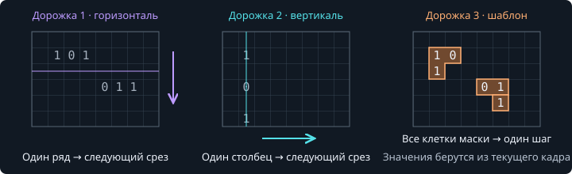
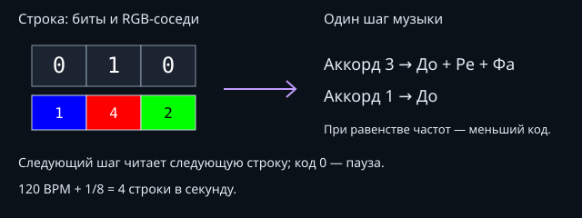
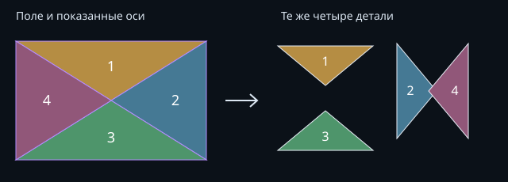

Точный поиск на больших полях · v1.014
После F5 или Ctrl+F5 поиск выключается, а связанное с ним воспроизведение не запускается автоматически. Кадр и настройки восстанавливаются; чтобы продолжить поиск, включите «Поиск» вручную. При уходе со страницы текущий поиск и сохранение его снимка отменяются.
Список последовательностей ищется совместно: общие начала слов читаются один раз. Когда нужное совпадение уже найдено, более поздние старты этой строки отсекаются; равные строки ещё сравниваются, чтобы сохранить точный порядок выбора. Уже найденные строки списка исключаются и на следующих кадрах. Повторять их позволяет только явно включённый режим «Каждый кадр»; изменение условий поиска начинает новый поиск по прежним правилам.
В версии 1.011 внизу окна появляется строка прогресса: номер кадра, текущий этап, его процент и прошедшее время. Построение, поиск, чтение и сжатие снимка показаны отдельно. Процент начинается заново при смене этапа; когда объём работы неизвестен, индикатор движется без процента. Завершение или ошибка остаются видны несколько секунд.
На 8192 и 16384 строках поиск последовательностей по строкам, столбцам и обеим диагоналям выполняется на WebGPU. Проверяются значения битов и наличие клеток: пустота не считается нулём. Варианты последовательности, маски, границы видимой области и «Без полос» сохраняют прежние правила. На CPU передаются координаты и счётчики совпадений.
«Змея», сложные маршруты, поиск с пропуском пустот, простые серии и поиск по наложению используют прежний движок. Плеер ждёт завершения поиска текущего кадра. Накопление найденных строк и режим «Каждый кадр» работают как прежде. Для открытия находки из журнала сохраняется полный точный снимок; его чтение и сжатие занимают отдельное время, даже если сам поиск уже закончен.
Что строит Маятник
Маятник — поле из двоичных клеток. В клетке записан 0 или 1, а ещё не построенное место остаётся пустым. Пустота и ноль — разные состояния: чёрный участок на экране не всегда означает нулевой бит. Цвет клетки зависит от выбранного вида, раскраски и наложенных слоёв.
Основой служит треугольник правила 90. При движении вниз складываются по XOR два верхних соседа: одинаковые значения дают 0, разные — 1. У одного исходного бита получаются строки 1, 11, 101, 1111, 10001… Это запись значений в строке; на холсте между соседними позициями треугольника есть шаг решётки.

При добавлении следующих вершин программа пересчитывает затронутые клетки. Для обычного конуса в расчёте участвуют и прежнее значение клетки, и верхние соседи. Поэтому картинку после многих вершин нельзя во всех режимах получить простым наклеиванием независимых готовых треугольников.
Вершины чередуются относительно якоря: 0, −1, +1, −2, +2… или в обратном порядке сторон. Из-за этого движения инструмент и называется Маятником. В обычной нумерации кадр показывает ход построения; в режиме пары и некоторых сравнениях смысл шага отличается.
Первый запуск: небольшой воспроизводимый опыт
- Откройте Хорр → Размер и выберите 128. Для начала это удобнее очень большого поля.
- В Построении выберите ЛевПрав. В разделе Поля выберите обычный Маятник.
- Откройте Вид поля и включите Биты. Цвета нуля и единицы можно настроить кружками на этой строке.
- В ромбе x выберите x1, в t — t0,1. Так изменения будут хорошо различимы.
- Нажмите центральное поле плеера. Повторное нажатие ставит паузу. Для точного кадра тяните пунктир.
- Для следующего опыта смените только один параметр: например, включите RGB-соседи или поменяйте направление построения.
Если меню уже было настроено раньше, его расположение может отличаться: группы сохраняют места и закрепления. Нужную команду узнавайте по полному названию в подсказке. На самих кнопках русские слова сокращены.
Очистка → Всё сразу возвращает стандартное состояние. Для сохранения интересного результата сначала создайте кадр в библиотеке или скачайте всю работу, а затем начинайте следующий опыт.
Плеер: кадр, скорость x и время t
При x1 и t0 значения на плеере зелёные. Двойной щелчок по значению x возвращает шаг 1, по значению t — нулевую паузу.
Контролы x и t всегда раскрыты на три части: предыдущий шаг, текущее значение, следующий шаг. Ширина каждого — 80 CSS px; наведение её не меняет. Положение плеера не меняется. Нажатие на значение открывает варианты; крайние стрелки меняют параметр на один шаг.
Номер кадра и знак ▶ / Ⅱ движутся вместе с бегунком между половинами X. Дорожка по бокам пунктирная. На первом кадре левая половина X соединяется рамкой с левой стрелкой, на последнем правая половина соединяется с правой. На паузе и после остановки правая половина X бегунка смотрит вправо, как и крайняя правая стрелка. Наведение на область пуска и паузы добавляет верхнюю и нижнюю границы между половинами X. Наведение на боковую зону подсвечивает её рамку.
Щелчок по бегунку на любой высоте запускает или приостанавливает плеер. Перетаскивание перематывает кадры. На паузе после продвижения красный × появляется сразу за правой стрелкой блока x, перед бегунком. Он возвращает к кадру 0, как и двойной щелчок по бегунку. Стрелки клавиатуры на бегунке сдвигают на один кадр, Home и End переходят к краям диапазона.
| Контроль | Что задаёт | Пример |
|---|---|---|
| x1…x64 | Порцию вершин за шаг анимации; обычные стрелки также используют выбранную порцию. | x4 проходит по четыре вершины за обычный экранный шаг. |
| t0…t2 | Время между кадрами в секундах, шаг 0,05 с. | t0,2 — пауза 200 мс; t0 — без заданной паузы. |
| Левая / правая стрелка на паузе | Шаг назад / вперёд на выбранную порцию x. | При x1 удобно сравнивать соседние состояния. |
| Красный × на паузе | Возвращает на кадр 0. Появляется слева от бегунка после продвижения. | Щелчок по самому бегунку возобновляет пуск. |
Список x содержит все числа 1…64. В самой верхней ячейке — 1, затем 2 справа, 3 слева; все чётные числа в правой половине, нечётные — в левой. Боковые стрелки меняют число на 1; повторный щелчок по раскрытому значению выбирает следующее, после 64 — 1. Список t сохраняет свои длительности. У x/t боковые квадратные ромбы соединены вершинами с центральным. В режиме широких краёв фактическая порция может увеличиваться: для 6N и 8N она масштабируется относительно ширины, см. главу о краях.
Список t содержит 21 вариант: 0; 0,1; 0,2; …; 2 секунды. Малые ромбы примыкают сторонами, по центру идут удвоения 0,1 → 0,2 → 0,4 → 0,8 → 1,6. Боковые стрелки сохраняют точный шаг 0,05 с; ранее выбранная промежуточная длительность не округляется при открытии списка.
Под плеером написаны тип построения, число строк и фактическая ширина. Над холстом — номера вершин: левые фиолетовые, правые голубые, ноль светлый. Знаки сохранены только у соседей −1 и +1; остальные номера без знака, сторону показывает цвет. Последняя вершина выделена жирностью, границы столбцов — короткими вертикальными штрихами.
Музыкальные настройки теперь в отдельном боковом окне: откройте Xorrom → Настройки. Его левую границу можно тянуть; крестик или Esc сворачивает окно, не останавливая звук. Библиотека → Музыка хранит готовые примеры. Окна открываются по одному. В настройках кнопки высотой20px, шесть групп с разными цветами обводки; Выкл останавливает сразу все дорожки и фон, сохраняя параметры.
Кнопка Линия в группе Xorrom рядом со Старт/Стоп включает или скрывает сразу все линии чтения, подписи и подсветку битов; музыка продолжает играть. Выбор сохраняется в ссылках и файле работы. При красной подписи Неточно все маркеры автоматически скрыты; при возвращении к точному масштабу вновь действует выбор кнопки. Скрытые линии не перехватывают мышь.
Линия чтения вне единиц тонкая,1px. Реальные клетки1 закрашиваются красным, на уже красных клетках — голубым; внутри закрашенного бита нет средней полосы. Соседние111 образуют общий блок одного цвета подсветки. Подписи Срез стоят у концов линии и сохраняют номера исходных строк, включая0. При открытой библиотеке или окне настроек линия и подписи заканчиваются у свободной границы поля.
Xorrom: музыка из битов — с нуля
В окне музыкальных настроек сверху находится общее управление всеми дорожками и создание новых. Затем выберите дорожку: её имя явно указано в заголовке, все параметры ниже относятся к ней. Первым идёт построение по источнику и рисунку, далее чтение оси и диапазона, ноты и ритм, тембр и фон. Огибающая, фильтр, LFO, эхо, реверберация и панорама разделены на отдельные блоки. Название и значение внутри кнопки стоят в одной строке; именованные списки и имя дорожки занимают две стандартные колонки, чтобы выбранное значение не обрезалось; боковые стрелки переключают значения, центральное поле допускает ручной ввод. Параметры выключенных режимов затемнены и сохраняют прежние значения. Если их редактирование было доступно, его можно подготовить до включения режима; автоматические действующие значения остаются читаемыми. Открытая библиотека оттесняет музыкальные линии и подписи к свободной части поля, сохраняя координаты чтения.
Алгоритмы музыкального поля и пресеты для ИИ. На примере квадрата 6×6 можно рассчитать ноты, проверить семь настроек по геометрии и скачать полный пресет. Справочник включает 42 параметра, JSON Schema и промпт для ИИ.
Xorrom озвучивает текущие биты поля несколькими независимыми дорожками. Откройте Библиотека → Музыка → Настройки Xorrom; в группе Xorrom нажмите «Настройки» для того же перехода. Выберите дорожку: все 42 музыкальных параметра ниже, включая темп, тембр, эффекты и фон, относятся к ней. У каждой дорожки свои цвет, линия чтения и музыкальный ход. Первый захват приостанавливает плеер поля; затем его можно запустить снова. Музыка сама не добавляет вершины.
Для первого опыта выберите Биты либо RGB-соседи. Можно озвучивать Серпинского, обычный Маятник, плоский кадр Аниматрицы и готовые сборки Хорр → Ромбо. Свёртку и составные экспериментальные проекции пока выключите. Крупный GPU-кадр сначала уменьшите до CPU. Звук начинается только по нажатию; послеF5 сохраняются настройки, но воспроизведение остаётся выключенным.
Дорожки: добавить, выбрать и смешать
- В списке Дорожка выберите нужную; поле Имя меняет её подпись. ＋ Дорожка создаёт независимую копию настроек и источника выбранной, без запуска.
- Задайте каждой свои параметры. ▶ Дорожка запускает или ставит на паузу выбранную; ■ Дорожка останавливает её. ▶ Все / ■ Все управляют всем набором.
- Без звука заглушает выбранную дорожку, сохраняя движение её линии. − Дорожка удаляет выбранную; последняя остаётся.
Линия и подписи окрашены в цвет дорожки. Захват линии выбирает её дорожку; при совпадении линий используйте список. Перетаскивание и ручное повторное озвучивание относятся только к ней. Единицы читаемого участка обведены; нули и пустые клетки разрывают светящиеся серии. Масштаб и прокрутка меняют вид, сохраняя музыкальные адреса клеток.
Строка, ось или часть между пересечениями
В поле Линия выберите Строки, Горизонталь, Вертикаль или диагональ ↘ / ↗. Для собственного отрезка задайте Начало X/Y и Конец X/Y: координаты центров клеток отсчитываются от нуля. ↻ Оси поля обновляет список видимых осей и частей между их пересечениями; затем выберите целую ось или нужную часть в «Линии». После изменения осей обновите список ещё раз.
Читающий отрезок движется перпендикулярно самому себе: горизонталь — вверх/вниз, вертикаль — влево/вправо, диагональ — поперёк диагонали. ⇄ Ход меняет направление; Повтор возвращает начало цикла. Длина выбранной части сохраняется, у границ поля отрезок обрезается. Один шаг музыки читает один такой срез. Тяните линию поперёк неё, чтобы выбрать и услышать другой срез.
Фикс оси удерживает текущий отрезок на координатах поля. Новый кадр заменяет читаемые биты под ним: фиксируется место, а звук вычисляется заново. Выключите фиксацию для движения по циклу.


Выделенный шаблон как музыкальный срез
- Выделите на поле один или несколько видимых шаблонов.
- В Библиотека → Музыка нажмите ＋ Шаблоны. Для каждого выделенного шаблона создаётся своя дорожка с настройками выбранной.
- Запустите дорожку или все дорожки. Весь шаблон звучит одним шагом: на каждом повторе читаются текущие биты поля под его непустыми клетками маски. Сохранённые нули и единицы самого шаблона задают места чтения; звучат значения текущего поля.
Обычная привязка следует перемещению шаблона. Фикс оси для такой дорожки закрепляет координаты маски; новые кадры продолжают менять звук под ней. Подсветка отмечает реальные единицы внутри маски, в том числе разрозненные. На доступной сборке Ромбо читаются исходные клетки соответствующих частей; подписи и оси сами в музыку не попадают.
Боковые подписи различают строку поля, срез движущейся оси и строку / диапазон строк шаблона. Номер среза — шаг поперёк оси; он может отличаться от номера строки. Для шаблона диапазон показывает его расположение на поле, хотя музыкальный шаг всего один.
Встроенные музыкальные примеры
Музыкальный ковёр — отдельная страница всех четырёх примеров. Картинка следует времени WAV или видео; читаемая строка подсвечивает настоящие серии единиц,111 одной рамкой. Можно перематывать по полю и смотреть MP4 с той же подсветкой. После последней прочитанной строки остаётся затухание без ложной подсветки битов.
Откройте Библиотека → Музыка: «Электро-робот», «XOR-пульс», «Стеклянные ступени» и «Пространство треугольника». Слушать воспроизводит готовую запись. Применить восстанавливает исходный кадр битов вместе с настройками Xorrom без автопуска; затем нажмите «Старт». Предпрослушивание останавливается при уходе из вкладки и закрытии библиотеки. Доступны отдельные JSON, WAV и полный файл исходного кадра «↓ Кадр». Примеры созданы из одного XOR-поля: 128 строк, 31 вершина Маятника, пустой фон, чтение сверху вниз. Описание исходного поля и настроек.
Первый опыт за минуту
- Постройте небольшое поле, например32строки. Откройте Библиотека → Музыка.
- Источник RGB, лад Мажор, тоника До C, октава4, тембр Треуг, темп96, доля1/8. Для одной ведущей ноты поставьте Аккорд1; затем попробуйте2–3.
- Нажмите ▶ Дорожка. Меняйте по одной настройке, чтобы услышать разницу. Пауза сохраняет место, Стоп возвращает начало.
- Переключите источник на Мелодия, затем на Ритм: один рисунок становится тремя разными музыкальными правилами.

Пример:32строки Серпинского, RGB, одна ведущая нота, До-мажор,120BPM,1/8,треугольный тембр. Это8секунд, созданные тем же ядром Xorrom.
Скачать пример WAVИз чего состоит музыка и чем управлять
| Понятие | Простыми словами | Что делает Xorrom |
|---|---|---|
| Нота / высота | Низкий или высокий звук. До,Ре,Ми,Фа,Соль,Ля,Си — семь привычных имён. В обычной равномерной настройке между До и следующим До12полутонов: есть также До♯,Ре♯ и другие промежуточные звуки. | RGB-категория либо число единиц строки выбирают ступень. |
| Лад | Выбранный набор ступеней. Мажор и минор отличаются расстояниями между ними. Пентатоника содержит5ступеней. | Мажор / Минор / Пента. Меняется набор высот, рисунок битов остаётся тем же. |
| Тоника / тональность | Главная нота, от которой строим лад. До-мажор = тоникаДо + мажорный лад. Диез♯ поднимает ноту на полутон. | Тоника отДо доСи со всеми полутонами. Переносит весь выбранный набор выше или ниже. |
| Октава | Низкий или высокий регистр той же ноты. Следующее До звучит вдвое чаще предыдущего. | 3ниже,4средняя,5выше. Октава не меняет скорость. |
| Темп | Скорость основных долей. BPM — количество долей в минуту. | Положительный темп без диапазона60–180, в том числе дробный. При120BPM четверть длится0,5с. |
| Ритм / длительность | Когда звучат события, сколько они длятся и где паузы. Одинаковый темп ещё не означает одинаковый ритм. | Шаг1/4,1/8или1/16. При120BPM это0,5/0,25/0,125с на строку. Нулевая или пустая строка может дать паузу. |
| Мелодия / созвучие | Ноты одна за другой образуют мелодию; несколько одновременно — созвучие. Аккордами музыканты называют определённые сочетания нот. | RGB берёт1–4самых частых ненулевых категории строки. Больше голосов даёт более плотное, иногда напряжённое звучание. |
| Тембр | «Голос» звука: одинаковая нота может напоминать мягкую волну или щипок струны. | Синус / Треуг / Щипок / Мягк кв. Это синтез звука, а не записанные инструменты. |
| Громкость | Сила звука. Отдельные усиления и ослабления музыканты называют динамикой. | 0–100%,начальное25%. Ноль — тишина; частота нот от этого не меняется. |
Музыкальный размер определяет группировку долей. Например, в размере 4/4 один такт содержит четыре четверти. В Xorrom настройка «Доля» задаёт время на одну строку. Здесь «строка» означает музыкальный шаг: для оси это срез, для шаблона — вся маска. В ручном режиме время шага постоянно, а в режиме Авто рисунок может меняться при переходе между фигурами.
Три точных правила из битов
- Мелодия. Считаем единицы строки. Нет единиц — пауза; иначе остаток от деления на7выбирает ступень0…6. Например,1единица → вторая ступень,7единиц → первая. В До-мажоре этоРе иДо. Число единиц может меняться, даже если ширина строки одинакова.
- RGB. Для каждой клетки берём тройку «слева / сама клетка / справа». R=клетка,G=слева,B=справа. Коды1…7дают ступени,0даёт паузу. Играют самые частые выбранные категории; при равенстве первым идёт меньший код. Аккорд задаёт максимум одновременных нот.
- Ритм. Столбцы повторяют три дорожки:0,3,6… — бочка;1,4,7… — малый барабан;2,5,8… — хэт. Если в дорожке строки есть хотя бы одна1,соответствующий удар звучит один раз на шаг. Пример строк100→010→001→000:бочка→малый→хэт→пауза.
| Код | Цвет RGB | В До-мажоре,октава4 |
|---|---|---|
| 0 | Чёрный | Пауза |
| 1 | Синий | До4 |
| 2 | Зелёный | Ре4 |
| 3 | Голубой | Ми4 |
| 4 | Красный | Фа4 |
| 5 | Пурпурный | Соль4 |
| 6 | Жёлтый | Ля4 |
| 7 | Белый | Си4 |
В миноре ступени другие; в пентатонике после пяти ступеней продолжаем на следующей октаве. Названия реально сыгранных нот показывает строка под пультом. В режиме RGB фильтр цветов участвует в озвучивании. Ч/Б-палитра сохраняет исходную категорию: белая маска сама по себе не превращает все ноты вСи. В обычном виде RGB-соседи вычисляются из эффективных0/1; произвольный цвет карандаша пока не назначает новую ноту.
Почему повторяется одна нота? В RGB при Аккорд 1 звучит самая частая ненулевая категория среза. Если она сохраняет первое место, разные рисунки дают ту же ноту; при равенстве выигрывает меньший код. Попробуйте Аккорд 2–4, чтобы услышать следующие категории, либо Авто рисунок, чтобы геометрия также меняла музыкальные параметры. Авто не гарантирует новую ноту на каждом шаге.
Ручная игра звучащей линией
Нажмите на подсвеченную линию,чтобы повторно сыграть текущую строку. Тяните её вверх/вниз — новые выбранные строки звучат сразу,как инструмент. Пока держите линию,автоматическое падение приостановлено. После отпускания движение продолжается с выбранного места,если до захвата музыка играла; при исходной паузе линия остаётся на месте. Захват не листает кадры и не двигает холст.
При фокусе на линии: ↑/↓ выбирают соседнюю строку, Home/End — начало/конец диапазона, Enter повторяет выбранную строку, Пробел переключает игру/паузу. Во время обновления кадра старые звуки отменяются; новый выбранный кадр подхватывается автоматически,не оживляя транспорт послеСтоп.
Электронные тембры
Нажмите ♫ Электро, затем Старт. Набор задаёт RGB,112BPM,долю1/16,До-минор,октаву3,Пульс,одну ноту и громкость25%. Диапазон и шаг строк,повтор,кадр и положение плеера сохраняются;сама кнопка звук не запускает. Авто рисунок выключается,чтобы выбранный тембр оставался ручным. Ноты по-прежнему вычисляются из показанных битов и цветовых категорий,включая доступные ромбы.
| Тембр | Характер |
|---|---|
| Бас | Короткий звук с затухающим фильтром: начало ярче,хвост мягче. Для низкого регистра выберите октаву2или3. |
| Пульс | Импульсная волна с короткой огибающей. Подходит для ровных повторяющихся синтезаторных фраз. |
| Металл | Звонкие негармонические частичные тоны,похожий на электронный колокольчик звук. |
| Робот | Формантный синтез гласных А/Э/У: голосовой оттенок выбирается по RGB-категории ноты. Это инструментальный тембр;текст он не произносит. |
Прежние Синус,Треугольник,Щипок и Мягкий квадрат сохранены. Источник Ритм использует отдельные бочку,малый барабан и хэт,поэтому выбор тонального тембра там недоступен. Все тембры одинаково рассчитываются для живой игры,ручной линии,WAV и аудиодорожки записи видео.
Пример8,57с: один и тот же16-строчный XOR-рисунок звучит последовательно как Пульс → Бас → Металл → Робот. Каждая часть≈2,14с,без внешних записей или сэмплов.
Kraftwerk — влиятельные пионеры машинной электронной музыки с синтетическими звуками и голосами (Moderna Museet). Электронные инструменты появились раньше:терменвокс изобретён в1920году (Metropolitan Museum). Наши тембры генерируются математически,а ноты задаёт поле.
Огибающая, эффекты и пресеты JSON
Для мягкого начала включите ADSR и увеличьте атаку. Чтобы услышать арпеджио, выберите RGB и разрешите хотя бы две ноты аккорда. Подробности о фильтре, LFO, панораме, эхе, реверберации и свинге приведены в справочнике синтезатора.
Музыкальный пресет загружается командами ↑ / ↓ JSON. Различия между пресетом, ссылкой и полной работой приведены ниже в одной таблице.
Музыка в Ромбо
Выберите Хорр → Ромбо → Готовые, включите ромб и нажмите Xorrom → Настройки → ▶ Дорожка. Работают все десять готовых сборок, восемь поворотов с шагом45° и общий переворот вида на180°. Музыкальная линия идёт сверху вниз по строкам собранной картинки. Её можно хватать и перемещать для повторного прослушивания.
Каждая музыкальная клетка обращается к исходному биту соответствующей части. Пустоты между частями остаются пустыми; оси, подписи, геоцентры и сама подсветка не превращаются в ноты. При RGB сохраняются исходные цветовые категории и выбранный фильтр цветов, включая чёрно-белое отображение. В режиме «Биты» соседние музыкальные категории вычисляются уже в строках собранной фигуры.
Смена кадра, сборки, строки оси, поворота или переворота вида обновляет партитуру. Масштабирование и прокрутка её не меняют. Музыкальная сетка берётся по минимальной точной ступени текущей фигуры: половинки и диагонали могут давать больше строк, чем исходное поле. Шаг строк позволяет ускорить проход. Авто рисунок анализирует области этой же собранной сетки. WAV и звуковая дорожка видео используют её же; для записи видео сначала запустите Xorrom.
Нужна сборка, доступная в точном режиме. Произвольные сгибы, собственные вырезы, GPU-поля и отдельные составные проекции пока не читаются. При ограничении появляется причина; вернитесь к доступной готовой сборке или уменьшите поле.
Справа возле библиотеки находятся два вертикальных ползунка: ♪ — громкость выбранной дорожки, BPM — её темп. Они управляют теми же параметрами, что и выбранная дорожка в «Библиотека → Музыка»; звук сами не запускают. Шкала BPM логарифмическая и расширяется после отпускания у её края. Точное значение можно ввести числом в меню. Стрелки клавиатуры меняют выделенный ползунок, Home/End выбирают края текущей шкалы.
Линия чтения и смена кадра
Переключатель С начала кадра возвращает линию к первой выбранной строке при ручном или автоматическом переходе на другой кадр. Если музыка играет, основная партия и фон начинают новую фразу сразу. На паузе линия возвращается в начало, звук сам не запускается. Выключенный режим сохраняет прежний музыкальный ход. Раскраска, изменение масштаба и поворот того же кадра не считаются переходом на другой кадр. Настройка входит в ссылки и рабочие файлы.
Два инструмента: мелодия и фон
Основная партия играет каждую выбранную строку. Второй инструмент в поле ♫ Фон держит фразу на нескольких шагах: это позволяет наложить медленные ноты на быструю мелодию. Они используют один темп и выбранный диапазон строк. В отличие от аккорда, второй инструмент имеет собственную волну и громкость.
| Фон | Что слышно |
|---|---|
| Выкл | Играет только основная партия; прежние ссылки открываются с выключенным фоном. |
| Созвучие | Два протяжных тона — тоника и квинта, обычно на октаву ниже основной партии. Это спокойная опора, а не самостоятельная быстрая мелодия. |
| Бас | Ведущая нота первой звучащей строки фразы, перенесённая на две октавы вниз с нижним пределом До1. |
| Вторая | Медленная мелодия на октаву ниже: берётся последняя из четырёх наиболее частых RGB-категорий первой звучащей строки фразы. Если есть только одна категория, повторяется она. В источнике Мелодия берётся нота по числу единиц; в Ритме — та же тональная формула поверх ударных. |
Волна фона — окраска второго инструмента: Синус даёт чистый мягкий тон, Треуг — более яркий, Мягк кв — насыщенный. Синусоида сама не задаёт мелодию: порядок высот берётся из рисунка. Фон % задаёт относительную громкость: 30 означает примерно 30% уровня основной партии. Общая громкость управляет обоими слоями; при добавлении фона оставляется запас от перегрузки.
Фраза строк задаёт длину удержания от1 до16 выбранных строк, с учётом шага строк. При4 фон меняется раз в четыре шага основной партии; при8 — в восемь. Каждая фраза вычисляется по первой звучащей строке своего блока. Внутренние паузы основной мелодии могут звучать поверх удержанного фона; полностью пустой блок молчит. Пауза, Стоп и смена кадра управляют обоими инструментами. Ручная линия повторно озвучивает мелодию и соответствующее место фоновой фразы.
Попробуйте: «♫ Электро» → «♫ Фон: Созвучие» → «Волна фона: Синус» → «Фон30%» → «Фраза строк4» → Старт. Затем переключите фон на «Вторая» и фразу на8: медленная партия будет меняться реже основной. Набор «Электро» сохраняет выбранный фон. Его обводка горит при точном совпадении настроек набора и гаснет после изменения этих настроек; фон и диапазон строк не снимают обводку. Каждая независимая дорожка может иметь такую основную партию и фон.
Пример одного битового узора: сначала основная партия без фона, затем с созвучием, затем со второй мелодией. Каждый фрагмент длится4,29с.
JSON, ссылка и полная работа
| Формат | Что переносит |
|---|---|
| ↓ / ↑ JSON | 42 музыкальных параметра выбранной дорожки: инструмент, темп, эффекты, фон и режимы геометрии. Без поля, списка дорожек, их осей и масок. Загрузка до 64 КиБ; после применения запускайте звук вручную. |
| Экспорт → Ссылка | Настройки поля и весь набор дорожек: выбор, имена, цвета, заглушение, позиции, музыкальные параметры, оси и сохранённые координаты масок. Новый адрес нужно создавать после изменений. Звук и текущий аудиотранспорт не записываются. Редактируемые экземпляры шаблонов на поле ссылка не переносит; координатная маска чтения входит в дорожку. |
| Полная работа .mayatnik | Поле, краска, редактируемые шаблоны и весь набор дорожек с их источниками. Подходит для продолжения редактирования и переноса большого опыта, который не помещается в ссылку. Открытие остаётся без автозвука. |
↓ WAV сохраняет общую смесь дорожек за один проход каждой, с её темпом и выбранной позицией; заглушённые дорожки молчат. Для видео сначала запустите нужные дорожки, затем запись: их смесь добавится в аудиодорожку видео. GIF звука не содержит.
Авто рисунок
Чтобы услышать границы фигур, выберите поле Серпинского, источник RGB и включите Авто рисунок. В поле От рисунка выберите Всё, в Связях — По сторонам. Нажмите Старт и протяните звучащую линию от широкого основания большого нулевого треугольника вниз до его острия. Пока линия проходит через эту фигуру, пульт удерживает одни музыкальные настройки. Ноты соседних строк могут различаться, поскольку их по-прежнему задают биты или RGB-категории всей строки. Строка без единиц в этом режиме даёт паузу.
Xorrom измеряет видимые биты снимка. Заливать фигуру краской для этого не требуется. Под пультом Обл обозначает выбранную фигуру, S — её площадь в клетках, H — высоту в строках, сим — самую длинную полосу последовательных строк, зеркально совпадающих относительно вертикальной оси фигуры. Площадь и высоту Xorrom берёт для фигуры целиком, включая строки за пределами музыкального диапазона.
| От рисунка | Какие настройки меняются |
|---|---|
| Области | Доля равна 1/4, когда ширина как минимум вдвое больше высоты, и 1/16, когда высота как минимум вдвое больше ширины. В остальных случаях — 1/8. Тембр зависит от периметра в сторонах клетки. До 8 — синус, 8–15 — треугольник, 16–31 — щипок, от 32 — мягкий квадрат. |
| Площади | Тоника начинается с ручной и поднимается на квинту (семь полутонов) при каждом удвоении площади. Например, от До при площади 1 получится До, при 2–3 — Соль, при 4–7 — Ре. Аккорд в RGB допускает до 1, 2, 3 или 4 нот при площади соответственно 1–3, 4–15, 16–63 или от 64 клеток. Громкость равна ручной, умноженной на 0,4 + 0,6 × S / (ширина × высота). Плотнее заполнен прямоугольник фигуры — громче звук. Ручная громкость задаёт потолок. |
| Симметрия | При сим меньше 2 строк звучит минор, при 2–3 — пентатоника, от 4 — мажор. Октава на единицу ниже ручной при высоте симметрии 0–1, совпадает с ручной при 2–7 и на единицу выше при 8 и более. Пределы октавы — 1 и 7. |
| Всё | Одновременно действуют все три правила. Темп BPM во всех режимах задаётся вручную. В источнике «Ритм» звучат бочка, малый барабан и хэт с длительностью шага и громкостью выбранной фигуры. |
Связи задают соседство клеток одного значения. Доступны «По сторонам», «Стороны + углы», «Только углы», «Шахматки 0» и «Один бит». На поле, где записана только одна чётность шахматной сетки, учитываются стороны и углы ромбических клеток. Выбор действует внутри Xorrom. Выключите Авто рисунок, чтобы вернуть ручные значения. Ручная игра линией и экспорт WAV используют те же правила, что и обычное воспроизведение.
Области вычисляются заново при смене рисунка; на больших полях это занимает время, в пульте появляется «Обновляю кадр…». Если кадры меняются быстрее анализа, остановите плеер поля или увеличьте его задержку, чтобы прослушать текущий рисунок. Музыкальный темп BPM и скорость смены кадров — разные настройки.
Повторы, диапазон и сохранение
От строки / До строки задают диапазон включительно, начиная с0. До−1означает до конца. Шаг строк1…32берёт каждую строку или каждую вторую,третью и т.д. Повтор возвращает начало выбранного диапазона. Обновлять захватывает новый текущий кадр в начале следующего круга: можно изменить биты,краску или вручную выбрать другой кадр. При смене кадра или редактировании битов новое поле захватывается сразу, независимо от «Обновлять», без остановки уже запущенного плеера поля.
Экспорт WAV ограничен 60 секундами; обрезанный проход явно помечается в статусе. Он не требует включать динамики. Во время игры или паузы берётся тот же снимок, который звучит. Остановка видеозаписи не выключает музыку; состав смеси описан в таблице сохранения.
При смене кадра или правке битов каждая дорожка обновляется по своему источнику: старые ноты гаснут, пустые читаемые клетки дают тишину. Стоп не превращается в автопуск после обновления. Когда вкладка скрыта, звук ставится на паузу; для продолжения вернитесь и запустите нужные дорожки.
Хорр → Размер и Построение
В «Хорре» есть шесть разделов Размер, Построение, Поля, Ромбо, Наложение и Прогон. При видимой линии встречи готовые размеры доступны слева от неё, а «N/3» и «4N» справа. «Размер» задаёт высоту, «Поля» — алгоритм или исходник; «Ромбо» преобразует показ выбранного построения.
Размер
| Пункт | Назначение |
|---|---|
| N/3 | 4N, первой строкой | Укороченное или удлинённое число шагов относительно N. При первом запуске и после полного сброса выбран 4N. Щелчок сразу перестраивает; повтор по выбранной половине снимает выбор. В обычном Маятнике и поле «Конус» выбранное N/3 задаёт начальный предел. Если потянуть точку встречи дальше вниз, диапазон открывается до 4N. |
| 128 / 256 / 512 / 1024 / 2024 / 4096 | Сразу построить поле указанной высоты. |
| 8192 / 16384 | Большие поля в основном Маятнике. Нужен WebGPU и вид «Бит». Для N/3, N и 4N доступность зависит от лимита буфера браузера. Доступны плеер, поиск последовательностей, серий и маршрутов «Змеи». |
| Задать | Своя высота от 8 до 4096 строк. Число можно набрать, изменить стрелками или ручкой; применить — Enter или «Задать». |
| Свои все / Свои N | Для своей последовательности использовать все исходные строки или только первые N. Это ограничение исходника, а не высота холста. |
Название N/3 обозначает готовый укороченный режим с небольшим запасом: фактически используется ceil(N/3) + ceil(N/64). Для 128 строк — 45 вершин, для 512 — 179. 4N задаёт удлинённое обычное построение; ограничения источников сравнения рассматриваются отдельно.
Построение
ЛевПрав: центр, влево, вправо и далее с увеличением расстояния. ПравЛев начинает с правой стороны. Построить рассчитывает выбранное поле. Прогон сначала получает конечный результат, затем открывает готовые строки сверху вниз; это отличается от настоящего расчёта по одной строке.
Рамка шага отмечает недавно рассчитанные биты. Кнопки Строка +1 и Строка −1 находятся в Масштабе: +1 рассчитывает очередную строку следующего хода, −1 отменяет строку незавершённого хода. Обычный плеер отменяет такой незаконченный промежуточный ход.
Продолжать доступно для источника «Конусы»: разрешает открывать кадры за прежним пределом. Выключение не выбрасывает уже открытый диапазон.
Аниматрица: матрица, строки и цвет
Откройте Аниматрицу в верхнем меню. Она пересчитывает взятый рисунок и показывает результат в общем плеере. Плеер, масштаб, контуры, цифры, RGB, заливка, шаблоны и экспорт используют полученное поле. Одновременно выбирается один источник: Аниматрица, обычный/свой Маятник либо сравнение.
Выберите построение в разделе «Клетки», «Отражения», «Строки Excel» или «Фигуры Excel». У активного раздела выделена рамка. Его список открывается сбоку. «Шаблоны» находятся в строках Excel, а «Глубина» и раскраска конуса находятся в фигурах Excel. «Исходник», «Цвета» и «Циклы» открываются отдельно, когда доступны для выбранного режима.
Примеры на снимках открываются в Маятнике на 64 исходных строках с сохранёнными настройками и номером кадра. Смотреть все примеры в Исследованиях.

Быстрый опыт без добавления вершин
- В разделе «Клетки» выберите 2 ед и Строки.
- В разделе «Исходник» команда С нуля начинает этот режим с одной верхней единицы.
- Установите x1 и удобную паузу t, затем запустите общий плеер.
- Каждый логический кадр пересчитает одну строку ниже. Верхняя строка сохраняется; новых вершин и движения якоря нет. Рамка шага отмечает только что рассчитанные клетки. Нажатие вне этих клеток или Esc скрывает рамку; расчёт остаётся на выбранном кадре.
- Первый проход закончится на нижней строке. При высоте 128 это 127 строковых шагов. Два цикла — 254 шага: второй проход снова начинается со второй строки поверх накопленного рисунка.
x задаёт количество логических шагов за показанный кадр. Поэтому для наблюдения каждой строки используйте x1; x4 пересчитывает четыре строки между обновлениями экрана. t задаёт паузу. Перемотка назад воспроизводит выбранный кадр от неизменяемого исходника.
Матрица и Строки
| Порядок | Один логический кадр | Направление |
|---|---|---|
| Матрица | Один вызов преобразования выбранной матрицы, как в Excel. Новое выделение становится входом следующего шага. | Вниз, вверх, влево или вправо. |
| Строки | Обычно пересчёт одной строки-получателя. В «Копии XOR» выполняется отражение вокруг одной оси за кадр. Верхняя строка сохраняется, после нижней начинается следующий выбранный цикл. | Сверху вниз. |
В режиме «Матрица» шкала отводит N шагов на цикл. Поле имеет фиксированные границы. Если выделению больше некуда сдвигаться, последующие кадры могут оставаться одинаковыми. Режим «Строки» действительно выполняет расчёт по очереди; прежний «Прогон» раскрывает уже готовую картинку.

Открыть в Маятнике · Исходник · кадр 0 · Матрица · кадр 1 · Строки · кадр 1

Открыть в Маятнике · Вниз · Вверх · Влево · Вправо
Алгоритмы и обычный Маятник
| Вариант | Значения | Особенность |
|---|---|---|
| 2 ед | Вниз/вверх: прежняя цель XOR два диагональных родителя. | Горизонтальные сдвиги используют снимок. |
| 3 ед | Вниз/вверх: сумма трёх источников 1 или 2 даёт 1, сумма 0 или 3 даёт 0. Влево/вправо: 1 только при ровно одной единице. | Это отдельный закон, несмотря на XOR в старых именах процедур. |
| ПравЛев | Вертикально — тот же XOR двух родителей и цели. | Вправо — каскад: следующий столбец читает уже изменённый предыдущий. Влево — снимок со сдвигом области. |
| Хорррус | Тот же закон и порядок, что у ПравЛев. | Сохранено отдельное имя найденного Excel-варианта; повторения задаются общим плеером x. |
| 00 | XOR двух родителей по снимку, без прежней цели. | Различает пустую клетку и записанный ноль. |
| Фон | Числа сохраняются. Одна заливка переносит цвет, две заливки гасятся независимо от оттенков. | Для первого опыта нажмите «Пример». У одиночной цифры без заливки переносить нечего. |
| Копии XOR | Накладывает отражённый верхний треугольник и продолжает рисунок под исходным полем. | Строки одной чётности, один кадр на ось. |
| Край XOR | Отражённые строки за нижним краем переносятся наверх. | Чётность сохраняется. Ось доходит до последней строки. |
| Зеркалиус | NAND симметричных битов с записью в верхнюю строку, как в макросе Excel. | Один кадр на ось. Синие жирные единицы и светло-серые обычные нули. |
| Выключить | Выход из Аниматрицы к обычному построению с вершинами. | Обычное XOR-построение. |
В обычном матричном шаге родителями служат клетки выбранной области, а прежняя цель читается из поля. У «00» и «Фона» используется расширенный снимок. Пересчёт по строкам читает актуальную предыдущую строку и прежние цели текущей строки.

Открыть в Маятнике · 2 ед · 3 ед · ПравЛев · Хорррус · 00 · Фон
Копии XOR
Откройте треугольник с одной решёткой, затем выберите Аниматрица → Отражения → Копии XOR. Верхний треугольник из одной строки отражается относительно строки 2, давая 1→3. У исходного треугольника 101 превращается в 111. Затем верхние две строки отражаются относительно строки 3, давая 2→4 и 1→5. Следом верхние три строки отражаются относительно строки 4, давая 3→5, 2→6 и 1→7. Все пары одного отражения накладываются в одном кадре. На следующем кадре ось сдвигается на одну строку. Ось располагается сразу под верхним треугольником и пропускается в текущем отражении.
В пределах исходного поля XOR выполняется по одинаковым столбцам, где записаны оба бита. Ниже исходного поля первое отражение записывает бит в пустую клетку, а последующие отражения складываются с ним через XOR. Синий отмечает переключение, красный — наложение без переключения. Ось идёт от строки 2 до предпоследней строки исходника. При 256 исходных строках последняя ось на строке 255, отражение может дойти до строки 509. В режиме ∞ следующий круг использует уже изменённое поле.
Сохранённые прогоны продолжаются по своему прежнему правилу. Чтобы включить продолжение вниз, нажмите «Копии XOR» ещё раз.

Открыть в Маятнике · Копии XOR · Край XOR · 2 цвета · Зеркалиус
Край XOR
Выберите Край XOR в Аниматрице, чтобы переносить отражённые строки через нижнюю границу. Для поля из 256 строк ось 129 отправляет строку 1 в позицию 257, которая возвращается в строку 1. При совпадении источника и цели их XOR даёт нули. На нечётной высоте чётные и нечётные строки обходят край по своим спискам. Все пары кадра читают значения с начала этого кадра.
Последняя ось находится на нижней строке. После неё ось возвращается на строку 2, сохраняя результат предыдущего круга.
В режиме ∞ плеер продлевает шкалу на следующий круг при воспроизведении, шаге вправо или перетаскивании бегунка за правый край. Номер кадра продолжает расти.
Раскраска «Край XOR»
В Аниматрица → Отражения → Край XOR выберите раскраску фона. «2 цвета» отмечает сменившиеся и сохранившиеся биты. «4 цвета» различает четыре перехода: зелёный 0→0, синий 0→1, фиолетовый 1→0, красный 1→1. Цвет клетки хранит последний обработанный переход.
В режиме «Excel» каждая строка читается слева направо. Сначала проверяются 0110 и 1001, затем 01 и 10. После совпадения проход продолжается за фрагментом. Пустая клетка прерывает фрагмент. Кнопка «Палитра» перебирает пять раскрасок. Шесть примеров на 256 строках.

Открыть в Маятнике · 4 цвета · Excel · палитра 1/5 · Excel · палитра 2/5 · Excel · палитра 3/5 · Excel · палитра 4/5 · Excel · палитра 5/5
Зеркалиус
В режиме Зеркалиус ось 2 накладывает строку 3 на строку 1, ось 3 накладывает 4 на 2 и 5 на 1. В каждом общем столбце только пара 1 и 1 даёт 0. Остальные пары дают 1. Ось доходит до предпоследней строки, затем новый круг начинается на получившемся поле. Для просмотра цветных цифр увеличьте поле до размера клетки от 4 экранных пикселей.
Другие построения из Excel
- Отскок из Xoroorius. Первая заполненная строка выбранной области служит образцом, следующая заполненная строка задаёт длину результата. Каждый кадр накладывает полную копию через XOR, начиная с новой позиции. Крайняя клетка посещается дважды, на прямом и обратном ходе. Синий и красный шрифт показывают направление. Полностью нулевая строка получает жёлтую заливку, полностью единичная — фиолетовый шрифт.
- ИнтерXOR и Цепь XOR из InterXoroorius. За кадр обрабатывается пара последовательных заполненных строк. Чётная разность длин даёт центрированный XOR, нечётная — переплетение. В «Цепь XOR» операция XOR берёт все строки сверху до цели. При трёх и более строках последняя замыкается с первой. Использованные строки серые, у последней пары и замыкания выделяется зелёная заливка. При упаковке на сетку равный выбор округляется на полбита влево. Рабочая ширина растёт при взятии исходника до лимита поля, после переполнения плеер оставляет последний полный кадр.
- Конус ↓, Конус ↑, Ромб и Качание используют правило «Треугсжатия». Существующий бит XOR-ится с двумя диагональными родителями. При первом заполнении используется обычный фон бита. У «Ромба» вершина идёт вправо, у «Качания» ход равен 0, −1, +1, −2, +2 и далее. Глубина задаётся в строках вместе с вершиной. Пустая вершина с заливкой переносит заливку по конусу.
- Столкновение накладывает поле на его поворот на 180° через XOR. Кадр 0 показывает исходник, кадр 1 показывает результат. Пуск с кадра 1 повторно показывает исходник перед результатом. Выделите прямоугольник, чтобы ограничить область, как в Excel. В выделении пустая клетка считается нулём. При работе со всем полем без выделения пары из двух пустых клеток остаются пустыми.
Перед запуском можно отметить прямоугольник в «Ячейках». Для конуса верхняя левая клетка выделения служит вершиной. Кнопка «Пример» подставляет небольшой треугольник. Цветные цифры видны при увеличении до размера клетки от 4 экранных пикселей.

Открыть в Маятнике · Отскок · ИнтерXOR · Цепь XOR

Открыть в Маятнике · Конус вниз · Конус вверх · Ромб · Качание · Столкновение
Раскраска конусов
В разделе «Фигуры Excel» рядом с «Глубиной» выберите «Смена» или «Excel». По умолчанию в режиме «Смена» заполненная клетка сохраняет цвет, если её бит остался прежним. При перекраске фон клетки становится синим для единицы или красным для нуля. Красный или синий фон возвращается к обычному при следующей перекраске. Цвет цифр задаётся отдельно в «Вид → Цифры и клетки». В режиме «Excel» то же правило действует на все обработанные заполненные клетки. Цвета вне области шага сохраняются в обоих режимах.

Открыть в Маятнике · Ромб · Смена · Ромб · Excel
Восемь цветов нуля
В меню «Вид → Цифры и клетки» нажимайте 0 Excel. Красный сменяется синим, затем идут зелёный, оранжевый, фиолетовый, бирюзовый, серый и коричневый. В конусах палитра меняет фон нулевых клеток, а единицы используют обычный фон бита. В остальных режимах палитра окрашивает цифру 0 и показывает 1 чёрной. Кнопка Цвет авто возвращает автоматическую раскраску. Цвет найденных шаблонов имеет приоритет над палитрой.
Открыть пример с зелёными нулями · 256 строк.

Открыть в Маятнике · Красный · Синий · Зелёный · Оранжевый · Фиолетовый · Бирюзовый · Серый · Коричневый
Шаблоны в ИнтерXOR и Цепи XOR
Введите в «Шаблоны» двоичные строки через пробел и нажмите Enter. Ввод нового списка начинает прогон с исходного кадра. Как в Excel, поиск отбрасывает первый бит каждого шаблона. Активная пара и полностью серые использованные строки соединяются в кольцо сверху вниз.
Красный шрифт показывает прямое совпадение, фиолетовый — инверсию битов, зелёный — обратный порядок. Каждый шаблон засчитывается один раз за прогон. За кадр отмечается первая подходящая строка из списка. Цвет видно на кадре находки, а счётчик сохраняет уже найденные совпадения.
Открыть пример с тремя шаблонами · кадр 3 · 256 строк. Кадры 1, 2 и 3 показывают красное, фиолетовое и зелёное совпадения.
Высота поля Аниматрицы
В меню «Хорр → Размер» выберите готовое число или введите своё и нажмите «Задать» либо Enter. Высота поля меняется в выбранном режиме Аниматрицы. Плеер ставится на паузу и показывает исходник на кадре 0. Нажмите «Плей», чтобы начать расчёт. При уменьшении строки за границей нового поля обрезаются.
«Отскок» использует две заполненные строки. Первая служит образцом, вторая принимает результат XOR. В примере из Исследований остальные строки заняты исходным треугольником.
Откуда берётся исходник
- Включить и выбор построения начинают с кадра 0. По умолчанию строится чистый исходник текущего режима. Явно захваченный исходник используется и при смене построения.
- Весь кадр берёт все строки и столбцы текущего поля как исходник кадра 0. Для конуса глубина устанавливается по высоте поля.
- Область в режиме «Матрица» и построениях Excel берёт прямоугольник, отмеченный инструментом «Ячейки», как активную область. Остальное поле остаётся окружением, а не обрезается.
- С нуля возвращает чистый исходник выбранного режима на текущей высоте.
- Пример создаёт небольшой цветной рисунок с уже записанными целями. На нём сразу различимы 2 ед, 3 ед и 00.
Режим «Строки» пересчитывает всё поле, поэтому захват отдельного выделения в нём отключён. Захват учитывает правки битов и нанесённую краску. При повторном захвате Аниматрицы отдельно сохраняются цвет цифры, заливка и жирность. Для захвата нужен плоский вид; после включения можно менять представление поля.
Наследование цвета
Исходные показывает цвета вычисленного состояния; Биты — обычные выбранные цвета 0 и 1. Это переключение показа сохраняет текущий кадр. У 2 ед, 3 ед, ПравЛев и Хорррус один цветной источник либо несколько одинаковых сохраняют оттенок; разные цветные источники дают чёрный. Чёрный и автоматический шрифт не считаются отдельными цветными участниками; при чтении снимка белый тоже исключён из смешивания. Жирность складывается через XOR. «00» наследует цвет по собственному правилу двух родителей; «Фон» работает с наличием заливок.
Жёлтая заливка у матричных ПравЛев/Хорррус отмечает новое выделение. Цвет цифры остаётся отдельным состоянием. RGB-соседи по-прежнему вычисляются из значений битов; они не заменяют закон наследования цвета Аниматрицы.

Открыть в Маятнике · Исходные · Биты
Сброс и сохранение
Исходник → Кадр 0 возвращает исходный кадр. Смена алгоритма, направления, порядка или числа циклов также начинает отсчёт от взятого исходника. Чтобы продолжить новый опыт именно от показанного результата, выберите «Весь кадр» или «Область».
Исходник, параметры и кадр входят в полную работу и ссылку. Большой исходник хранится в базе браузера; настройки содержат ссылку на него. Для переноса используйте файл работы либо резервную копию. Слишком большая ссылка предложит сохранить работу файлом.
Предел исходника — 2 100 000 клеток. Вне фиксированного поля — пустота, края не замыкаются. Перескок относится к обычному Маятнику: его включение возвращает обычное построение. Конусная карта 1093 и линии будущих вершин не описывают Аниматрицу.

Бесконечные циклы и точный повтор
«Число» выполняет 1–64 цикла. «∞» продолжает расчёт без сброса поля и номера кадра. «Повтор» ищет точное повторение состояния на границах полных циклов и останавливает обычное воспроизведение после вычисления начала и периода. Учитываются биты, наличие клеток, цвета, заливка, начертание и выделение. Результат «С 2 · T 4» означает: с состояния после цикла 2 повторяются каждые 4 цикла, первое совпадение приходится на цикл 6. Цикл 0 — исходник. Определение начала может закончиться позже первого совпадения: это показывается в подсказке статуса. Поле не сбрасывается для поиска. Один цикл «Строк» — H−1 принимающих строк, один цикл «Матрицы» — H сдвигов. Быстрое «Построить» ограничено текущим диапазоном; бесконечное продолжение включается обычным Play. «Вспышка» в Аниматрице показывает клетки с реальным изменением бита, цвета или заливки.
Поля, свои последовательности и сравнения
| Источник | Что происходит |
|---|---|
| Маятник | Обычное построение с чередованием сторон. |
| Своя последовательность | Исходные двоичные строки из библиотеки центрируются на поле. В кадре 0 виден исходник; последующие ходы строятся от него. |
| Конусы · 5.7 | XOR-пересчёт внутри нового конуса. |
| Поле · 5.8 | При добавлении вершины пересчитывается всё существующее поле. |
| Обе стороны · 5.9 | Вершина и её отражение ставятся перед одним общим проходом; это отдельный алгоритм пары. |
| Рандом | Квадрат N×N случайных битов; вне квадрата пусто. |
| Ковёр | Ковёр Серпинского размером 3k, ближайшим снизу к выбранному N. |
Три сравниваемых источника 5.7/5.8/5.9 используют общую рамку N × (2N−1). Нулевой кадр пуст, первый добавляет центральную вершину. В варианте «Обе стороны» некоторые промежуточные кадры пары могут не менять картинку.
Наложение источников
В разделе Наложение выберите XOR или AND, затем сочетание: «Конусы+Обе», «Обе+Поле», «Поле+Конусы» или «Все три». Для двух битов XOR оставляет различия; AND — только общие единицы. Для трёх XOR оставляет единицу при нечётном числе единиц. Пустота остаётся пустой там, где пусты все участвующие источники.
| A | B | XOR | AND |
|---|---|---|---|
| 0 | 0 | 0 | 0 |
| 0 | 1 | 1 | 0 |
| 1 | 0 | 1 | 0 |
| 1 | 1 | 0 | 1 |
Прямо | Зеркл. меняет ориентацию источника «Поле» 5.8, в том числе внутри сочетаний. Это не отражение одновременно всех источников.
Дополнения своего исходника
Своя решётка меняет шаг вершин с одного столбца на два: −2,+2,−4,+4… либо обратный порядок сторон. Инв. сверху заполняет пустой внутренний промежуток инверсией бита над ним: 0→1, 1→0; записанные биты не перетирает. Эти дополнения применяются к обычному/своему построению и не заменяют алгоритмы сравнения.
Хорр → Поля → Пустоты 0. Для своего исходника, парного Маятника и Хода XOR с начальным конусом можно выбрать «Сверху», «Слева», «Справа» или «Снизу». Пустая клетка между крайними битами своей строки получает инверсию ближайшего соседа в выбранном направлении. Берутся биты исходного кадра 0. Вариант «Выкл» возвращает исходное заполнение. Если кадр 0 пуст, левый предел перемотки плеера — кадр 1.
Опыт: найти различие алгоритмов глазами
- Установите один размер, например 128, и один номер кадра.
- Последовательно включите «Конусы», «Поле» и «Обе стороны», сохраняя кадры в библиотеку.
- Включите XOR двух интересующих источников: единицы покажут места различия.
- Переключите на AND: останутся общие единицы.
На панели каждой ручной оси две дополнительные стрелки запускают автодвижение в выбранную сторону. Повторное нажатие активной стрелки останавливает ось. Число рядом — скорость от 1 до 10000 полубитов в секунду: например, 2 означает один бит в секунду. Достигнув края поля, ось разворачивается. Скрытые оси приостанавливаются; перетаскивание останавливает автодвижение. «Остановить всё» останавливает и оси.
Масштаб и положение холста
Подписи интерфейса не выделяются мышью; текст в полях ввода можно выделять и менять. Нижние треугольники считаются каждый напрямую от исходного кадра, а не от предыдущего уменьшенного. Например, при 512 строках и шаге 43 получаются 469, 426, 383 строки. «Часть ×» — отношение исходной высоты к высоте уменьшенного растра. При включении живого Гиф-Масштаба верхний рисунок принудительно переходит в1:1: один пиксель исходного растра на физический пиксель экрана. Все нижние рисунки имеют экранную ширину верхнего, но меньшую высоту: высота каждой ячейки сохраняется, а её ширина может растягиваться. «Показ ×1» означает этот начальный размер. Дальше все рисунки масштабируются вместе, сохраняя общую ширину и одинаковую высоту ячейки.
Колесо над полем увеличивает и уменьшает рисунок вокруг точки под курсором по горизонтали и вертикали. Во время изменения масштаба четыре диагональные стрелки направлены к курсору. Включённые закрепления «Верх», «Вниз» и оси сохраняют приоритет; правые + и − дают тот же основной контроль. Перетаскивание поля меняет положение; для работы с инструментом сначала включайте именно нужный инструмент.
| Контроль | Смысл |
|---|---|
| Верх | Вниз | Удерживать верхний или нижний край. Оба вместе удерживают края; включённый1:1 и «Блок» имеют приоритет, сам «Вниз» масштаб не увеличивает. |
| Шрна по Оси | Центрировать якорную ось, пока поле помещается по ширине, включая режим Гиф-Масштаб. Кнопка меняет только положение, сохраняя масштаб и вертикальную прокрутку. Если увеличение колесом выводит рисунок за ширину окна, горизонтальный якорь остаётся на оси до следующего щелчка; затем колесо снова ориентируется на курсор. Если при масштабе поле шире видимой части браузера, его можно тянуть вправо/влево с включённой кнопкой; когда оно снова помещается, центрирование возвращается. |
| Блок | Запретить случайное изменение масштаба колесом, кнопками и жестом. |
| 1:1 | Установить и держать один физический пиксель на бит до выключения. Колесо, щипок, вписывание и изменение окна сохраняют1:1. При выключении текущий масштаб остаётся1:1; менять его можно, если выключен «Блок». |
| Кратность | 1 — все целые ступени точной сетки; 2…10 — степени выбранного основания от её шага. Стрелки изменяют основание. |
| Строка +1 / −1 | Рассчитать или отменить одну строку незаконченного хода; удобно изучать распространение узора. |
Под плеером чередуются светлые и тёмные подписи, числа без пробелов. Метка Точно означает строгую решётку без смешивания соседних цветов. Масштаб показывается из канонического шага: 1/1, 2/1… для прямой сетки и √2/1, 2√2/1… при45°. Дроби, при которых отдельные биты исчезают, не выбираются. Общий предел —512CSS-пикселей на клетку, дополнительно действует предел целого растра; недоступность объясняется явно.
При выключенной «Ширина по Оси» холст свободно сдвигается по горизонтали при любом масштабе. При включённой кнопке сдвиг также доступен,когда поле шире видимой области. Запас по краям позволяет довести каждую границу ширины до середины видимой части поля. При открытой библиотеке учитывается оставшаяся видимая часть.
Наложение: сравнение с увеличенной копией
«Наложение» — самостоятельная группа меню со своим заголовком, сворачиванием и закреплением.
Первое «Наложение» запоминает чистое построение текущего кадра с цветами и правками и увеличивает его от вершины вдвое. Следующие нажатия дают ×3, ×4 и далее от того же снимка. Оси и подписи в копию не входят. «Сдвиг» предлагает центральную G, правую R, левую B и совмещение RGB. «Шаг» выбирает цикл 8, 16, 32, 64 или 128; его смена выключает наложение.
«Фиксировать» закрепляет текущую копию на экране. «Оригинал» совмещает размер и центры клеток исходного поля с копией и привязывает последующее масштабирование к общей вершине. «По оси» центрирует копию по X, сохраняя Y и размер. Видимость 100/50/0 позволяет сравнить слои или скрыть копию. «Умен.» создаёт грубую сетку q×q: блок остаётся битом, если все его клетки содержат одинаковое значение. Смешанные и неполные блоки остаются пустыми. На 8192 и 16384 строках уменьшение читает исходные биты частями и сохраняет результат для поиска по наложению.

«Сброс наложения» забывает снимок, следующее включение берёт свежий. После F5 источник снимается заново; старая экранная фиксация не восстанавливается. На больших полях исходником становится видимая область. Совмещение ограничено масштабом 40.
Пример: сравнить два состояния с одной опорой
- Выберите исходный кадр и нажмите «Наложение».
- Установите видимость 50% и нажмите «Фиксировать».
- Переключите кадр оригинала, затем используйте «Оригинал» для совмещения сеток.
- Завершив сравнение, нажмите «Сброс наложения».
Вид поля: основа и независимые наложения
Встык · одна решётка
В обычном плоском Маятнике откройте Вид поля → Встык. На первом ходе один конус начинается рядами 1 → 11 → 101 → 1111. В ряду клетки соприкасаются. Каждый второй ряд смещён на полклетки, а ширина конуса с каждой строкой растёт на одну клетку. Каждый бит ниже вершины получает XOR от двух соседей сверху. За краем конуса родитель считается нулём.
Следующие вершины занимают ту же решётку. Переключение вида при необходимости пересчитывает текущий кадр. Вид запоминается после F5. Под плеером в этом виде появляется «Стык +1 бит/строку». Точный показ возможен при чётном количестве физических пикселей на бит. При меньшем масштабе используется обзор.
Примеры Аниматрицы из Исследований открываются встык. В плоском виде «Биты» или «Цвет» переключатель «Встык» сохраняет текущий кадр. Однорешёточные поля показывают биты вплотную. Когда в строках могут быть заняты обе решётки, сохраняются все столбцы, а соседние ряды сдвигаются на полбита.
Встык 2 × 2
Откройте Вид поля → Встык 2×2. Один исходный бит занимает четыре квадратные клетки. При включённых цифрах его значение повторяется в каждой клетке. Ряды треугольника центрируются по общей оси, а четыре клетки каждого бита остаются на одной сетке. Рисунок и два примера.
Инверт и Автоинверт
В группе «Вид» выберите Биты или Цвет, затем нажмите Инверт. Повторное нажатие возвращает обычное состояние. Обводка «Инверт» показывает текущую фазу.
| Вариант | Что меняется | Пример |
|---|---|---|
| Биты | Видимые значения 0 и 1 меняются местами; выделение, поиск и музыка читают новые значения. Пустые места остаются пустыми. | 1001 → 0110 |
| Цвет | Только выбранные цвета нуля и единицы меняются местами. Числа 0/1 и остальные цвета RGB сохраняются. | Если 1 белая, а 0 чёрная, то 1 станет чёрной, а 0 — белой. |
Автоинверт чередует текущую фазу при каждом переходе к другому кадру: обычный → инвертированный → обычный. Ручной шаг и скачок на далёкий кадр тоже переключают фазу один раз. Масштабирование, перенос холста и перерисовка того же кадра её не переключают. После выключения авто остаётся текущая фаза; «Инверт» можно нажимать вручную.
Выбранный вариант, фаза и авто сохраняются в настройках, ссылках и работе. Обновление страницы с восстановлением того же кадра не добавляет лишнего переключения. «Сброс вида» возвращает обычные биты и выключает авто; «Сброс кнопок» меняет только раскладку меню.
Три основных вида выбираются по одному: Перекрытия, Биты, RGB-соседи. «Перекрытия» различают исходные и изменившиеся клетки цветом; «Биты» показывают значения 0 и 1 выбранными образцами; RGB кодирует локальное окружение клетки.
Тени в «Виде поля» рисуют две копии силуэта видимых единиц. Светлый кант сдвинут на 0,22 клетки вверх и влево, тёмный на 0,28 вниз и вправо. Сдвиги масштабируются вместе с клеткой. Эффект доступен в плоском поле на процессоре.
Контуры и Цифры дополняют выбранную основу. Поэтому можно видеть, например, «Биты + Контуры + Цифры» или «RGB + Контуры». Цветные кружки на соответствующих строках открывают их палитры.
Подгруппа «Контуры»
Три строки собраны рядом в общей зубчатой рамке: включение «Контуры», способ обводки, затем «Авто / Свои». Пока «Контуры» выключены, обе нижние строки затемнены и недоступны. Включение возвращает их доступность и прежний выбор. Кружки показывают действующие цвета. У общего контура виден один кружок. Правка цвета в двухцветном режиме включает «Свои».
| Способ | Как читать границу |
|---|---|
| Общ | Единый контур первым собственным цветом. |
| Равн | Граница между одинаковыми битами — антицветом; между разными обводки нет. |
| Двойн | У разных битов две полосы, по одной со стороны каждого бита. |
| 1/0 | Вертикальная граница между разными соседями — цветом 1, межстрочная — цветом 0; у одинаковых 1–1 используется 0, у 0–0 — 1. |
| Авто | Свои | Автоматическое правило цветов или собственная пара образцов. Сам способ обводки остаётся выбранным. |
В группе «Виды поля» кнопка «Вспышка / Тепло» включает два независимых эффекта. Вспышка выделяет новую вершину. Тепло сравнивает бит с предыдущим кадром: смена 0↔1 повышает температуру на ступень, повтор того же бита понижает её на ступень. После холодного состояния идут жёлтый, оранжевый, красный, пурпурный и белый. При паузе цвет сохраняется. Новая клетка начинает холодной. Выберите окраску всех битов, только единиц, только нулей или чередование 1↔0. Период задаётся от 1 до 64 кадров: при периоде 2 единицы окрашиваются на кадрах 1–2, нули на 3–4. Второй бит виден в обычной раскраске, его температура продолжает считаться. Кнопка «Только при 1» задаёт отдельное правило расчёта. Пока в клетке 0, уровень тепла сохраняется. Переход 0→1 прибавляет ступень, повтор 1→1 убавляет ступень. Кнопку можно сочетать с любым фильтром окраски.
После полного сброса и сброса «Вид» включён «Треуг» (до треугольника). Обычное построение и выбор размера поля сохраняют выбранный режим. Настройки «Тепла» доступны только при включённом эффекте и подходящем виде поля; период — только при «1↔0». Выключение не стирает значения. В ромбической сетке, где эффект не применяется, его кнопка и настройки недоступны.
Отдельная группа «Вид»
Здесь находятся дополнительные правила показа: чётность клеток/строк/столбцов, заполнение пустот, полосы, обводка, геометрический центр, грани, подписи и настройки цифр. Шрифт и размер цифр меняют подписи внутри клеток, а не значения поля.
180° соединяет повёрнутые части; Целиком добавляет полную перевёрнутую копию; Вверх ногами поворачивает весь показанный холст вместе с линиями и подписями. Меню остаётся на месте. Для поворота только прямоугольного фрагмента используйте «Ячейки».
RGB-соседи — подробно
Режим включается правой половиной кнопки «Бит | RGB». Цветовые фильтры и режимы ЧБ, цвет и БЧ видны под кнопкой, а доступны при выбранном RGB.
RGB показывает не только значение клетки, но и два её горизонтальных соседних бита. Один цвет отвечает на вопрос: «каковы левый сосед, сама клетка и правый сосед в этом месте?»
1. Как три бита включают три канала
- R, красный включается, если сама клетка = 1.
- G, зелёный включается, если сосед слева = 1.
- B, синий включается, если сосед справа = 1.
Выключенный канал равен 0, включённый — полному цвету. Каналы складываются: красный + зелёный = жёлтый, красный + синий = пурпурный, зелёный + синий = голубой, все три = белый. Нет включённых каналов — чёрный.

101 в примере даёт код цвета 011, а не 101.За границей поля сосед считается нулём; незаписанный или скрытый сосед не даёт единицу в канал. Сама пустая клетка не становится отдельным девятым RGB-классом. Чёрный RGB-класс 000 — записанная клетка с нулевой тройкой, и его можно выбирать как другие цвета.
В отражениях Аниматрицы слева и справа берутся соседние места той же решётки. В исходном растре они отстоят на два столбца. Пустое место внутри самой решётки даёт ноль в канал.
2. Все восемь цветов

| Цвет | Слева | Клетка | Справа | Код R–G–B |
|---|---|---|---|---|
| Чёрный | 0 | 0 | 0 | 000 |
| Красный | 0 | 1 | 0 | 100 |
| Зелёный | 1 | 0 | 0 | 010 |
| Синий | 0 | 0 | 1 | 001 |
| Жёлтый | 1 | 1 | 0 | 110 |
| Пурпурный | 0 | 1 | 1 | 101 |
| Голубой | 1 | 0 | 1 | 011 |
| Белый | 1 | 1 | 1 | 111 |
Попробуйте: соберите цвет из трёх битов
Нажимайте соседей. Здесь меняется только учебная схема.
3. Выбор нескольких классов
Перед нажатием цвета или режима ЧБ/Цвт/БЧ проверяется результат для текущего поля. Если оно станет целиком чёрным или белым, кнопка затемняется и недоступна. Проверка учитывает и пустые клетки; при изменении кадра доступность пересчитывается. Заблокированное действие не меняет выбранные цвета и сохранённые настройки.
- Включите Вид поля → RGB-соседи.
- Нажмите один цветной треугольник. Останутся клетки этого класса.
- Нажмите второй, третий и другие — они добавляются к выбору.
- Повторное нажатие снимает только этот цвет. Галочка и светлая обводка отмечают выбранный треугольник.
- Снимите все галочки, чтобы снова увидеть все восемь классов.
Пустой набор означает «фильтр не задан», а не «ничего не показывать». Счётчики убраны с кнопок: число клеток и код класса доступны в подсказке. Если выбранный класс отсутствует на текущем кадре, соответствующая часть рисунка будет пустой — это допустимый результат.
Пример. Выберите голубой и пурпурный. Останутся центры пространственных троек 101 и 011. В одной из них текущий бит — 0, в другой — 1. Цветовой фильтр выбирает локальные формы окружения, а не только все единицы или все нули.
4. Цвт, ЧБ и БЧ
| Режим | Выбранные классы | Остальные места |
|---|---|---|
| Цвт | Сохраняют свои RGB-цвета. | Скрываются, если задан набор цветов. При пустом наборе видны все классы. |
| ЧБ | Становятся белыми. | Становятся чёрными. |
| БЧ | Становятся чёрными. | Становятся белыми. |

В чёрно-белом преобразовании белый означает попадание в выбранную группу либо её дополнение, смотря какой режим включён. Это не обещание, что исходный бит равен 1. В БЧ белым становится и фон вне выбранных классов. Если не выбрано ни одного цвета, все записанные RGB-клетки считаются выбранными.
Опыт: выделить один тип окружения как маску
- Остановите кадр и включите RGB.
- Оставьте только голубой класс: пространственная тройка 1–0–1.
- Нажмите ЧБ: выбранные центры станут белыми, остальное — чёрным.
- Включите БЧ: получите обратное изображение той же маски.
- Вернитесь в Цвт и добавьте пурпурный — сравните объединение двух классов.
5. Заливка и шаблоны работают по тому, что показано
В RGB инструменты учитывают показанный цвет и выбранный фильтр. В «Цвт» область берётся по видимому RGB-цвету; скрытая фильтром клетка не служит доступной клеткой для захвата. В ЧБ/БЧ область определяется чёрно-белым результатом. Например, два разных RGB-класса, ставшие соседними белыми клетками, могут соединиться в одну область по выбранному правилу связности.
Поэтому переключение Цвт → ЧБ может изменить не только вид, но и форму области, которую удастся залить или взять в шаблон. Для сравнения именно исходных 0/1 переключите основу на Биты. Сами треугольники фильтра не переписывают двоичное поле.
При смене кадра меняется окружение клеток и, следовательно, их RGB-классы. Один и тот же выбранный цвет обозначает одно правило тройки во всех кадрах, но его места на рисунке могут перемещаться и исчезать.
Почему восемь цветов, а наборов выбора больше?
Три бинарных канала дают 2³ = 8 цветов. У восьми переключателей 2⁸ = 256 состояний выбора. Это число наборов, а не число RGB-цветов. Пустой набор трактуется как «все», поэтому некоторые настройки дают одинаковый рисунок.
Чётность и заполнение пустот
В «Виде» есть независимые пары Клетки, Строки, Столбцы → Чёт / Нечёт. Можно показывать обе части, одну либо ни одной. Чётность клетки означает положение в шахматной решётке, а не значение её бита.
Строки и столбцы нумеруются с 1. Если оставить нечётные строки, видны 1,3,5,7… Малый ромб в составной кнопке попеременно оставляет только чётные и только нечётные. Он не меняет исходные 0/1.

Стр вложенно / Кл вложенно позволяют добавить уровни и настроить каждый отдельно. Удаление уровня возвращает предыдущую стадию фильтрации.
Заполнить пустоты — включить / выключить копирование ближайшей видимой строки в скрытые промежутки. Предпочитается строка сверху, у края используется доступная крайняя. Заполнение участвует в показе, цифрах и экспорте, но исходные биты сохраняются.
Край и ширина xN−1 — подробно
N — число строк поля. Коэффициент в «Крае» задаёт, сколько таких высот занимает ширина: W = m × N − 1, где m = 2, 4, 6 или 8.
1. Что означает минус один
Для поля в N строк один обычный треугольник занимает до 2N−1 столбцов: слева от центрального столбца N−1, сам центр 1 и справа ещё N−1. Поэтому (N−1)+1+(N−1)=2N−1. Режимы 4N, 6N, 8N в группе «Край» дают более широкую рамку, а высота остаётся N.
При N=512 обычная ширина 1023. В варианте 4N−1 — 2047 столбцов, 6N−1 — 3071, 8N−1 — 4095. «−1» относится ко всей ширине после умножения.

| Коэффициент | Формула ширины | N=128 | N=512 |
|---|---|---|---|
| 2N | 2N−1 | 255 | 1023 |
| 4N | 4N−1 | 511 | 2047 |
| 6N | 6N−1 | 767 | 3071 |
| 8N | 8N−1 | 1023 | 4095 |
Посчитать свою ширину
Учебный расчёт формулы. В рабочем Маятнике для очень больших размеров коэффициент может уменьшаться из-за ограничения числа клеток.
2. Не путайте три разных «четвёрки»
| Где | Что значит |
|---|---|
| Плеер x4 | Порция продвижения анимации. |
| Хорр → Размер → 4N | Удлинённое число вершин/ходов обычного построения. |
| Край → Ширина → 4N | Рамка шириной 4N−1 при высоте N. |
На экране под плеером показывается фактическая ширина. Эта подпись полезнее предположения по одному названию кнопки: сравнения и свой исходник имеют собственную геометрию.
3. Перескок, сброс хода и отскок
Зависимости кнопок: «Перескок» включает режим края; без него «Отскок», «Сбрасывать», ширина и «Концы» недоступны. «− / +» работают при включённых «Концах» и в пределах масштаба полосы. Выключение родительского режима сохраняет значения зависимых настроек. Универсальный Ромб находится в Хорр → Ромбо и не требует «Перескока».
Перескок через границу и возврат счётчика в центр — разные действия. В группе Край рядом с «Перескоком» и «Отскоком» есть кнопка Сбрасывать. По умолчанию она выключена: номера ходов и маятниковые смещения продолжаются без сброса. Включённая кнопка повторяет цикл, снова начиная в центре поверх накопленного рисунка. Явно сохранённый выбор режима сохраняется при обновлении страницы.
Порядок вершин: «ЛевПрав» даёт смещения 0, −1, +1, −2, +2… от центра, «ПравЛев» меняет стороны местами. Это чередование сторон, а не однонаправленный обход строки. Физический перенос через ширину поля действует при обоих состояниях «Сбрасывать».
Пример без пары: N=8, W=2N−1=15, центр — столбец 8
Столбцы здесь нумеруются с единицы. Начало: 8, 7, 9, 6, 10…. Ход 14 со смещением −7 попадает в столбец 1; ход 15 со смещением +7 — в столбец 15; ход 16 со смещением −8 выходит слева и переносится тоже в столбец 15.
| После хода 16 | «Сбрасывать» включено | «Сбрасывать» выключено |
|---|---|---|
| Следующий ход | Новый цикл, смещение 0 → столбец 8 | Ход 17, +8 → столбец 1 |
| Ещё один | Смещение −1 → столбец 7 | Ход 18, −9 → столбец 14 |
| Затем | Смещение +1 → столбец 9 | Ход 19, +9 → столбец 2 |
Сбрасывать включено: …1, 15, 15 | 8, 7, 9…, где черта — начало нового цикла. Сбрасывать выключено: …1, 15, 15, 1, 14, 2, 13, 3…. В обоих случаях два соседних попадания в столбец 15 — это правый край при +7 и перескочившая слева вершина при −8.
«Сбрасывать» включено: ширина W=mN−1, ходов в цикле min(mN, 16384); в показанном примере это mN=W+1=16. После них счётчик хода возвращается в 0, увеличивается число циклов; следующий конус снова центральный. Биты поля не очищаются, чистый исходник не загружается: новый цикл взаимодействует с накопленным рисунком.
«Сбрасывать» выключено: общий номер хода не обнуляется, диапазон плеера расширяется по мере продолжения. Перенесённые через края вершины затем идут от противоположных краёв к центру, сохраняя чередование сторон. При W=15 смещения −15 и +15 естественно попадают в столбец 8 по модулю ширины. Счётчик циклов здесь отмечает повторы маршрута положений: 2W одиночных ходов либо W парных. Такое попадание в центр не является сбросом хода: следующий номер продолжает расти, поле сохраняется. Ограничение — 1 048 576 кадров; на нём воспроизведение ставится на паузу с сообщением, без автоматического возврата в начало.
Переключение «Сбрасывать» перестраивает поле в кадр 0 и начинает новый опыт. Это отличается от самого продолжения внутри выбранного режима: там поле не очищается.
Формула переноса: при нумерации с нуля c=((A+d)%W+W)%W, где A — центр, d — очередное смещение. Для A=7, W=15, d=−8 получается c=14, то есть столбец 15. При d=−15 и d=+15 получается c=7, то есть центр 8.
Особенность сохранённого парного режима: якорь ставится один раз при создании поля; далее ход добавляет пару −(k+1), +(k+1). При включённом «Сбрасывать» новый цикл снова начинает с пары −1/+1, без повторной вставки центрального якоря. При выключенном номера пар и смещения продолжаются без обнуления. Пример и схема относятся к режиму без пары.
Отскок (пинг-понг): вершина отражается от обоих краёв. При ширине W=15 маршрут по столбцам идёт 1, 2, …, 15, 14, …, 1; крайняя клетка не дублируется на развороте. Период полного прохода туда и обратно — 2(W−1)=28. Выключенное «Сбрасывать» продолжает этот маршрут с глобальным номером хода; при включении кнопки после конца диапазона начинается новый цикл поверх накопленного поля. При перемотке восстанавливаются и биты, и розовые отметки текущего круга.

Плеер может проходить несколько циклов; подпись сообщает число перескоков/отскоков и циклов. Слово «Сброс» появляется в подписи только при включённом «Сбрасывать»; выключенный режим не добавляет отдельную подпись «Без сброса». При широких краях фактическая порция анимации увеличивается относительно x: множитель равен max(1, m/4), с округлением. Например, при x4 для m=2/4 порция 4, для m=6 — 6, для m=8 — 8.
4. Остальные кнопки группы
- Розовые клетки
- Розовым автоматически отмечаются клетки, последними записанные перескочившей вершиной; отдельной кнопки этой подсветки в «Крае» нет. В ромбических геометриях эта отметка не рисуется.
- Концы
- Отдельная нижняя полоса стыка правого и левого краёв. −/+ и колесо над ней меняют её масштаб от 0,5 до 2.
Опыт: увидеть действие края
- Выберите обычный Маятник, N=128, затем включите «Край → Перескок».
- Начните с ширины 2N и x1, t0,1. Откройте «Концы».
- Доведите вершину до края и проследите появление на другой стороне. Розовая отметка помогает найти последние записи.
- Включите «Отскок» и сравните путь и узор.
- Выберите 4N, затем 8N. Смена ширины перестраивает поле и возвращает подгонку всего края в окно.
Геометрия края применяется к обычному Маятнику. Источники сравнения и собственный исходник используют другие правила. Поле ограничено примерно 100 миллионами клеток: при большом N программа снижает слишком широкий коэффициент. Фактический результат смотрите в подписи под плеером.
Перескок, отскок и ширина только подготавливают поле, а воспроизведение запускает Play. При t0 Play выполняет x шагов на обновление экрана; быстрая команда «Построить» считает пачки и работает иначе. Пауза и повторный Play сохраняют обычный режим. Цвет вспышки закреплён за исходной ветвью: правая синяя после переноса появляется слева и продолжает вправо, левая жёлтая — наоборот. Жёлтые границы ширины поля — сплошные линии толщиной один экранный пиксель независимо от увеличения.
Шов между столбцами. Готовые сборки используют целые исходные клетки; край и поворот не разрезают центральный бит пополам. В сборке10 при нечётной ширине центральная колонка может целиком входить в обе половины. Кнопка Убрать дубль оставляет одну копию перед перестановкой четвертей. В подходящих боковых сборках она также удаляет только доказанный повтор тех же исходных адресов и строк. Совпадение текущего цвета разных столбцов не считается дублем. Без повторной колонки кнопка неактивна; в сборке9 дубля нет. Выбор сохраняется в ссылках, файлах работы и наборах настроек.
Хорр → Ромбо: ось, сборка и поворот
Ромб преобразует показ текущего построения: обычного Маятника, своего исходника и других видов поля. Он не зависит от «Перескока» в Крае. Исходные биты остаются в своей системе координат.
Ось задаёт строку горизонтального сгиба — от 1 до высоты текущего построения, по умолчанию последнюю строку. Стрелки сдвигают ось на одну строку; число можно ввести и применить Enter. Исходник ниже выбранной строки отсекается, верхняя часть сохраняется и отражается вниз через ось. Поэтому движение оси меняет и срез, и высоту получившейся фигуры.
Сборка использует реальные исходные треугольники: C — центральный, L и R — у левой и правой границ «Перескока». В широких полях 6N/8N промежуточные области не включаются. В боковых вариантах L и R используются по одному: можно поменять их местами и независимо отразить каждую часть. Маска движется вместе с рисунком, поэтому силуэты вариантов могут отличаться. Источник не растягивается.
Без боковых частей доступны два отдельных варианта: копия C, повёрнутая на 180° вниз (меняются и горизонталь, и вертикаль), и обмен диагональных четвертей полученного ромба 1↔3, 2↔4. Нумерация по кругу: сверху 1, 2; снизу 4, 3. Обмен переносит четверти без поворота рисунка внутри каждой.
Поворот всей сборки: 0°, 45°, 90°, 135°, 180°, 225°, 270°, 315°. Обычный щелчок добавляет 45°, правый вычитает 45°. Кнопка «Схемы» открывает таблицу вариантов. Боковые сборки доступны при «Перескоке» в плоском виде; если текущая проекция не поддерживается, указана причина, исходное поле остаётся на экране.
При включённом «Ромбе» под фигурой видна компактная интерактивная таблица сборок, в том числе при закрытом меню. Нажмите на схему для выбора; текущая выделена рамкой. Мышь, Enter и пробел выполняют одно и то же действие. Контуры схем получаются из того же плана, что и большое поле. Увеличение масштаба сдвигает таблицу вниз вместе с фигурой; она доступна прокруткой. Числовой пульт показывает номер в таблице, стрелки переходят между доступными вариантами. Ось и общий угол сохраняются. При смене настроек, сбросе или открытии работы схема обновляется автоматически.

Обзор: уменьшить весь рисунок
Обзор доступен постоянно, отдельной кнопки больше нет. Уменьшайте колесом или кнопкой −. Для изменения масштаба снимите явную фиксацию 1:1 и независимый Блок. Рисунок может стать меньше1:1; отдельные биты при этом пропускаются. Каждый экранный пиксель берёт цвет одной исходной клетки — усреднения цветов нет. Снимок Наложения также использует центры физических пикселей без усреднения. Обзор не меняет биты, краску, формы или музыку; музыкальная партитура остаётся по исходным клеткам. Режим подходит и обычному полю, и готовым сборкам Ромбо на всех восьми углах.
В подписи появляется Обзор и точная дробь масштаба, например1/4 или1/8; на диагональных решётках дробь может содержать√2. Без кратности доступны дробные ступени, отличающиеся примерно на один физический пиксель размера проекции. С кратностью используются ближайшие доступные ступени. Нажмите0 для вписывания по ширине; режимы «по ширине»/«по высоте» сохраняют привязку при изменении окна. Независимый Блок продолжает удерживать масштаб — для изменения его надо выключить.
Для различимых битов увеличьте рисунок до точного масштаба либо включите фиксацию1:1 в совместимой проекции. Под плеером Точно или Неточно показывает фактическую точность текущей решётки. Независимый Блок не сбрасывается. Старые ссылки, файлы и наборы с выключенным Обзором также разрешают уменьшение; явная фиксация1:1 сохраняется. Полный PNG сохраняет строгую выборку исходных клеток, а видео/GIF видимого окна отражают текущий обзор.
Точные биты без смешивания
Большое увеличение рисует только видимую часть поля. В Ромбо она разбита на экранные плитки: на каждом стыке и при прокрутке выбирается та же исходная клетка, цвета не смешиваются. Полный размер фигуры сохраняется для перемещения, кликов и линии чтения. Прежний предел16Мп увеличенной картинки больше не ограничивает экранный зум. Предельный масштаб по-прежнему512CSS-пикселей на клетку; физический масштаб зависит от плотности экрана. Полный PNG и другие полные снимки имеют отдельные пределы16Мп/16384px, а видео и GIF видимого окна собираются из всех экранных плиток.
Отображение работает в точном режиме. Каждый пиксель битового слоя получает RGBA конкретной исходной клетки: усреднения соседних цветов нет. Поворот и масштаб не меняют значения битов или их исходные адреса. Оси, подписи, выделения и геоцентры остаются отдельными отметками поверх рисунка и не становятся битами.
Для прямой сетки допустимы целые физические масштабы: 1/1, 2/1, 3/1…. Готовые сборки с половинками клеток требуют минимум 2/1, чтобы половинки не пропали. Для углов 45°, 135°, 225° и 315° используется другая решётка: √2/1, 2√2/1, 3√2/1…. При первом диагональном шаге переход к соседней клетке смещает её на один физический пиксель по обеим координатам. В подписи показывается точное выражение масштаба; плотность экрана Windows учтена.
Колесо, щипок, кнопки, вписывание и открытие старой ссылки выбирают допустимую ступень. Если всё поле не помещается в окно, оно остаётся крупным и доступно перетаскиванием. Уменьшение доступно постоянно; потеря отдельных клеток помечается под плеером как «Неточно». Кратность ×2…×10 задаёт степени выбранного основания от шага решётки; без кратности доступны все целые ступени. Верхнее x4 плеера меняет шаг кадров, а не масштаб.
1:1 сохраняет один физический пиксель на бит. При повороте на 45° или половинках клеток эта кнопка недоступна; при уже включённом 1:1 несовместимый поворот блокируется до выключения 1:1. Исходный угол и сборка не подменяются автоматически. Если новое число строки оси недопустимо, поле ввода возвращается к действительной строке.
Лимиты полного экспорта — 16 миллионов пикселей и16384 по стороне. Если полный снимок не помещается даже на минимальной точной ступени, экспорт сообщает причину; экранный показ видимой части остаётся доступным. Произвольные сгибы, собственные треугольные вырезы и большие GPU-поля пока не поддерживаются строгой решёткой: вместо неточного изображения появляется объяснение. Для собственной сборки вернитесь к Готовым. Старые сохранения с такими режимами сохраняют свои данные.
PNG и видео используют тот же точный выбор исходных клеток. Экспорт не меняет экранный масштаб и не подмешивает соседние цвета. Служебные отметки сохраняются отдельным слоем.
Сборка треугольников между осями
Хорр → Ромбо → Детали открывает нижний редактор. Здесь «найти» означает выделить замкнутые треугольные участки исходного плоского поля по показанным осям и его границам. Это поиск геометрии между линиями; цвет и значение битов не задают контур детали.

- На исходном поле включите нужные оси. Для простого опыта проведите две диагонали от угла до угла. Учитываются их настоящие конечные отрезки: незамкнутые линии не превращаются в треугольники.
- Откройте Детали → Найти. Все треугольные области появятся в нижнем ряду миниатюр; одинаковая площадь не объединяет детали. Нетреугольные области в сборку не входят.
- Выберите миниатюру или саму деталь на нижнем поле и тяните. Магнит притягивает близкие рёбра и вершины. −45° / +45° вращают выбранную деталь; Зеркало отражает её.
- Сброс возвращает выбранную деталь, Все — все положения. Общие Отмена / Повтор возвращают законченные действия; отмена протяжки не создаёт отдельной записи.
- Сборка включает и выключает применение результата на основном поле. После поиска результат включается сразу. Запустите обычный плеер: части остаются на своих местах, биты и раскраска внутри обновляются по кадрам.
Если «Найти» сообщает, что замкнутых треугольников нет, сначала задайте две диагональные оси на исходном плоском поле. Жёлтая ось готовой схемы Ромбо не подменяет эти отрезки. Границы деталей фиксируются в момент поиска. Изменение кадра или масштаба не запускает новый поиск. При смене источника, размеров или проекции сохранённая сборка становится недоступной: верните исходное поле либо выполните поиск заново. Сборка сохраняется послеF5, в ссылке и полном файле работы. Готовые возвращает десять прежних схем Ромбо, сохраняя собственные детали. Закрыть нижний редактор можно его кнопкой Закрыть.
Секторы креста
На узком экране прокручивайте схемы по горизонтали, чтобы прочитать подписи.
В «Осях» включите «Секторы креста». Буквы обозначают области, цифра 1 — левую сторону, 2 — правую. Заглавная А и строчная а относятся к разным областям.
- А1 · А2
- Над горизонталью, между вертикалью и диагоналями.
- Б1 · Б2
- Над горизонталью, снаружи верхних диагоналей.
- а1 · а2
- Под горизонталью, между вертикалью и диагоналями.
- б1 · б2
- Под горизонталью, снаружи центральных диагоналей.
- С1 · С2
- Внешние нижние области за наклонными линиями, идущими от краёв поля.
Сами линии — границы, они не принадлежат сектору. Если вертикаль закреплена или смещена, её положение может отличаться от центра диагоналей. Подписи следуют реальной геометрии.
Зеркала по крестам
В «Виде» включите «Зеркала крестов» и выберите направление отражения. Ниже показан один крест. Цвета на схеме обозначают источник каждой области; фактура взята из настоящего поля.
Отражения всех крестов читают один исходный снимок. Поле и слой краски остаются прежними, меняется показанный результат. При выборе сектора программа ищет точную клетку-источник: пустое место или координата между клетками не округляются. Такие пиксели остаются прежними. Внешние С1/С2 могут заполнить лишь часть остальных областей.
Зеркала крестов работают в плоском виде при масштабе внутренней решётки 1:1. Если выбран несовместимый вид, Маятник объясняет причину в подсказке.
Карта треугольников и оси по времени
В «Осях» есть специальный источник Карта 1093. Это точная карта перевёрнутых треугольников для стандартного пустого Маятника на 512 строк, а не универсальная разметка любого рисунка.

- Оси карты
- Вертикальные промежутки между соседними перевёрнутыми треугольниками: от острия одного до основания следующего; последний отрезок идёт вниз.
- Маска узора
- Ограничивает новую заливку узором между треугольниками; нанесённая ранее краска сохраняется.
- Зеркала ▼
- Отражают верхний рисунок внутрь треугольников по их верхним основаниям. Отражения читают один исходный снимок.
- Автооси ▼
- Вычисляют треугольники текущего поля; это отдельный источник, который не следует смешивать с готовой картой 1093.
Источник «По времени»
Меняйте кадр с включёнными «Осями карты»: разметка берётся из таблицы именно этого кадра для двух решёток A и B. В измеренных кадрах 1–179 есть отслеживаемые треугольники, в 180–500 их нет. После 500 измерений нет: это отсутствие данных, а не продолжение траекторий.
Для несовместимого размера или режима ориентируйтесь на пояснение Маятника. Переход к чужому построению не делает старую карту новой точной разметкой.
Раскраска
Копии в ямах · с версии0.939. Включите этот режим в «Раскраске», чтобы заполнить настоящие перевёрнутые треугольники из нулевых битов уменьшенными копиями рисунка. Пустые клетки, где бит ещё не построен, ямами не считаются. Источник «Текущий рисунок» обновляется по кадрам вместе с растровой раскраской поля. Отдельно перемещаемые шаблоны в образец не входят. Копия поворачивается на180°, вписывается с сохранением пропорций и обрезается по границам ямы. Цвет копий и вложенность1–4 задаются отдельно.
Источник «Образец» использует независимую двоичную последовательность до256бит и высоту8–512строк. Из неё строится рисунок по XOR двух боковых соседей; одиночная 1 даёт треугольник Серпинского. Меняя последовательность, вы меняете только образец копий. Вложенные уровни используют неизменный исходный образец, исходные биты Маятника и ручная краска сохраняются. Поддержаны плоское поле и «Ромбы · всё поле»; в остальных проекциях, соединённых видах, свёртке и режиме одних цифр управление недоступно, настройка сохраняется. Для произвольного рисунка точное самоподобие Серпинского не предполагается.
Красить пустоты. Кнопка «Пустоты» включает живую раскраску шахматных промежутков между показанными чётными и нечётными битами. Пустая клетка целиком получает общий цвет только тогда, когда сверху, справа, снизу и слева есть видимые биты и все четыре имеют один и тот же точный цвет. Разные цвета, многоцветная соседняя клетка или отсутствующий сосед оставляют пустоту. Диагональные соседи не участвуют; видимый нулевой бит не считается пустым.
Заливка пересчитывается при смене кадра, палитры и чётности. Она использует цвета уже раскрашенных соседей, а не создаёт новый цвет и не распространяется дальше от заполненных пустот. Исходные биты и ручная краска сохраняются. Поддержаны плоские квадратные виды, квадратный вид180° и «Ромбы · всё поле»; в отдельных ромбических решётках и треугольниках кнопка недоступна, а причина показана в подсказке. Выбранное включение сохраняется для возвращения к совместимому виду.
Краска помогает проследить отдельные области узора. Откройте «Раскраска», включите «Заливка», выберите цвет кружком рядом с кнопкой и щёлкните по области поля. Пустая клетка и нарисованный ноль имеют разный смысл. Выбранный способ соединения клеток определяет, куда сможет распространиться цвет. Перетаскивание поля сдвигает изображение; двойной щелчок снимает заливку.
Как соединяются клетки
«Область» предлагает «По сторонам», «Стороны + углы», «Только углы», «Шахматки 0» и «Один бит». В первом случае касания углом недостаточно. «Стороны + углы» допускают диагональные переходы; «Только углы» оставляет диагональные связи. «Шахматки 0» — специальный режим работы с нулями шахматной решётки. «Один бит» красит единственную клетку и игнорирует зеркальную пару.
Весь цвет включает карандаш, который заменяет выбранным цветом все пиксели точно такого же RGB по всему текущему полю, включая раздельные участки. Включите режим, задайте цвет заливки и щёлкните по образцу на поле. Связность областей здесь не ограничивает замену; это изменение краски, а не значений битов. Одна «Отмена» возвращает предыдущую раскраску.
Раскраска на следующих кадрах
Тройка Выкл · Цвет · Биты в «Раскраске» задаёт перенос любой ручной раскраски, в том числе «Весь цвет». Сначала нанесите краску и выберите вариант; затем запустите плеер или смените кадр вручную. «Цвет» заново заменяет исходный RGB по всему новому кадру. «Биты» сохраняет краску на прежних клетках, даже если 0 сменился на 1. «Выкл» снимает перенос, сохраняя ручную краску текущего кадра. Параметры и образец переносятся ссылкой и файлом работы. Обычные клетки переживают масштаб и смену вида; следы сложных растровых отражений воспроизводятся только в своей точной проекции.
| Пример | Клетки слева направо | Что сохраняется |
|---|---|---|
| До включения | 1 0 1 | Карандашом окрашена первая единица. |
| Следующий кадр, «Цвет» | 0 1 1 | Цвет исходных единиц: окрашены новые совпадения. |
| Следующий кадр, «Биты» | 0 1 1 | Место первой клетки: теперь окрашен её ноль. |
«Зеркально» добавляет соответствующую область относительно центра поля. Shift временно добавляет зеркальную пару при заливке. «Таких же» переносит цвета ручной раскраски на совпадающее расположение нулей и единиц по полю. «Симметр» проверяет зеркальные места в тех же строках. Повторное нажатие этих режимов снимает только созданную ими автокраску. «Одиночные 1» и «Одиночные 0» красят клетки без соседа того же бита через сторону; касание углом не считается. У каждой кнопки справа круглая палитра: отдельно для единиц и отдельно для нулей. Нажатие круга меняет цвет, не включая и не выключая режим. Цвета сохраняются в настройках, работе и ссылке. Эти кнопки фиксируются независимо: включите нужную или обе, затем запустите плеер. На каждом новом кадре, включая ручной шаг, одиночные биты находятся заново и окрашиваются собственным цветом соответствующей кнопки. Включение не останавливает плеер. Для этого пересчёта не требуется «Повтор краски». Выключение кнопки убирает только её автоматическую окраску; ручная краска сохраняется. Выбор запоминается в настройках, ссылках и работе.
Столб, центр, оси и автоматическая раскраска
«Столб» сначала нужно включить, затем щёлкнуть по биту. Запоминаются его значение, столбец и начальная клетка. На следующих кадрах совпадающие биты от этого места вниз автоматически окрашиваются в том же столбце. Другой щелчок заменяет выбор. Кружок справа задаёт собственный цвет инструмента; режим «На кадр» меняет его на каждом кадре.
«Центр краской» обрабатывает области, касающиеся центрального столбца: выключено, по единицам, по нулям. Отдельные «Центр 1» и «Центр 0» позволяют включить оба типа и задать каждому цвет. «Ось 2» расширяет окраску симметричными парами, пока слева и справа стоят равные биты. Для окраски от ручной оси используйте её кнопки «1» и «0»: они включают автоматическую заливку прилегающих областей соответствующего бита по выбранной связности «Область». Можно включить обе. В обычном виде заливка работает сразу и при включённых зеркалах/XOR, даже когда показана только часть поля: она следует фактически отображаемым битам. При каждом кадре и перемещении оси области вычисляются заново. Справа у каждого переключателя круглая палитра: свои цвета единиц и нулей у каждой оси. Круг меняет только цвет, не переключая режим. Включённая часть имеет яркую обводку; выключение снимает только автоматическую окраску этой оси, сохраняя ручную краску. Отдельная общая кнопка «От осей» больше не нужна и удалена из меню. Цвета и включённые режимы осей сохраняются в ссылке и полной работе.
«Авто» проходит столбцы от вершины в обе стороны и красит ещё не окрашенные области. Повтор останавливает процесс. «Авто: палитра» перебирает собственную палитру, начиная с выбранного цвета; выключение оставляет один цвет. «Рост» продолжает уже нанесённую краску при переходе вперёд на новые кадры. При выключенном «Рост: свой цвет» он наследует исходные цвета; при включённом наносит новую краску своим цветом. Прежняя окраска от этого не меняется.
Цвета Заливки, Столба, Авто, Роста, Точки и ТочкиОси настраиваются отдельно. При наведении или фокусе на кружке появляется маленькая кнопка автосмены: откройте её и выберите «Выкл», «На построение» или «На кадр». «Сброс цветов» возвращает настройки цвета выбранной группы и выключает её автосмену, сохраняя нанесённую краску. Различия команд очистки разобраны ниже.
Пример: один столбец на нескольких кадрах
- Остановите кадр и включите «Столб».
- Выберите его цвет и щёлкните по единице в нужном столбце.
- Перейдите на следующий кадр: инструмент продолжит красить выбранный тип бита от выбранного места вниз.
- Для смены цвета на каждом кадре выберите у кружка «На кадр».
Точка Ось
«Точка» включена по умолчанию. Вертикальный пунктир от последней видимой строки до нижнего значка виден и при уменьшении поля.
Эта группа наносит краску относительно точки встречи. «Точка» переключается между выключенным состоянием, единицами и нулями. Она начинает заливку от битов на осях точки встречи и использует выбранные правила области раскраски.
«ТочкаОсь» имеет те же три состояния, но распространяет цвет по другому правилу: вниз и по диагоналям вниз, а по горизонтали — к оси. Настройка связности обычной Заливки на этот режим не действует. Выбирайте его, когда нужно показать направленные связи рисунка, а не связную область.
У «Точки» и «ТочкиОси» свои кружки цвета и автосмена. «Рост» общий с Раскраской: продолжает нанесённую краску на новых кадрах. «Трети» разбивает показ кадра на три шага: сначала верх, затем боковые части слева и справа, затем низ. Повторное нажатие выключает этот способ показа.
Кнопка «Точка» в группе «Оси» управляет точкой встречи и следованием оси за кадром. «Точка» в «Точка Ось» управляет краской. Различайте группу, подсказку и цветовой кружок.
Захватите центр встречи и тяните вверх-вниз для смены кадров. На предпоследнем кадре обычного Маятника направляющие продолжаются до их пересечения. На большом поле выбранный кадр применяется при отпускании; отмена жеста возвращает прежний кадр. Захват свободной оси вдали от центра сохраняет её ручное перемещение.
Новый шаблон в Ромбо: нажмите правой кнопкой по показанным битам. Выбирается связная область текущего цвета, с действующим ограничением площади. Обводка и затемнение учитывают поворот, отражённые части, прокрутку и увеличение; исходная область может быть за пределами окна. Рамка остаётся тонкой на экране, а её положение соответствует клеткам выбранного шаблона.
Выбор и изменение шаблонов
Шаблон — отдельная фигура, которую можно выбрать, копировать, перемещать и сохранить. «Взять цвет» собирает пиксели выбранного цвета текущего изображения. Выбор связной области использует настройку «Область». «Автошаблоны: счёт» подсчитывает области кадра по соседству через сторону и показывает размеры, цвет и соседства.
Режим «Один» заменяет выделение, «Вместе» добавляет фигуры к набору. Правый щелчок выбирает шаблон; повтор по активной фигуре позволяет снять её выбор. «Найти все» выделяет совпадающие копии выбранного шаблона. Щелчок по его карточке в библиотеке также выбирает все вхождения. Поддерживаемое выделение обновляется при переходах по кадрам; Esc прекращает его и снимает выбор.

Группы меню раскрываются «гармошкой»: кнопки появляются по одной строке сверху вниз, вся группа — примерно за0,7секунды. Быстрое закрытие или выбор другой группы прерывает раскрытие без пустот. При включённом системном уменьшении анимации группы показываются сразу.
У выделенного шаблона открывается компактный пульт с короткими подписями и значками. Команды собраны по назначению: копии и библиотека, цвет и видимость, размер, перемещение и след, отражения и XOR, возврат. Высота и видимость подписаны в процентах, сдвиг — в строках. Полный смысл команды виден в подсказке. Пульт подстраивает число столбцов под ширину окна и прокручивается, если по высоте не помещается; действия, выбор и осевые ручки работают как прежде.
Перемещение и преобразования
Включите «Двигать» и тяните ось выбранных одинаковых шаблонов. Горизонтальная ручка перемещает влево-вправо, вертикальная — вверх-вниз. Два пальца сдвигают и масштабируют поле. «Ещё копия» добавляет независимый экземпляр. Отражения ↔ и ↕ переворачивают фигуру; варианты зеркал позволяют создать копию за край или за выбранную линию.
Высота задаётся от 1 до 3200 процентов, кнопки «Выше/Ниже» меняют её на 10 процентов исходного размера. «Пропорции» изменяет ширину вместе с высотой относительно центра фигуры. «Вниз, строк» допускает значения от −4096 до 4096; видимость — от 0 до 100 процентов. «Туда/назад» возвращает исходное положение и размер, а следующий щелчок возвращает изменённое состояние, в том числе для фигуры за краем поля.
«Без следа» снимает исходную заливку при переносе, сохраняя биты узора. «Инверт-след» оставляет противоположный цвет бита: 1 становится чёрным, 0 — белым. «Прокрасть» окрашивает все выбранные видимые шаблоны, единицы и нули вместе; повтор снимает именно эту окраску. «Маска» закрывает фигурой ещё меняющиеся клетки, оставляя анимированный рисунок в её просветах.
«Спуск» проводит шаблоны вниз по строке за шаг, пока под ними застывшие биты. Перед ещё меняющимися клетками либо у низа поля движение прекращается. Это один проход; повтор кнопки останавливает его. Собственные оси шаблона «Верт/Гориз» при первом нажатии создаются обе в центре, затем показываются независимо. Для поворота со старой фигурой доступны XOR и AND.
Ручки поворота позволяют развернуть шаблон на 180° вокруг центральных, граничных или показанных ручных осей. «XOR ↓1» переносит единицы под шаблоном на строку ниже со сдвигом на столбец в обе стороны через XOR. «Xor-Next» использует фигуру как единицы и смещение k вниз и в стороны; после нажатия k увеличивается на один. Каждый такой шаг берётся от исходной фигуры, k ограничен высотой поля.
Delete временно скрывает выбранные фигуры только в текущем кадре и виде. Backspace и «Убрать с поля» убирают выбранные полевые шаблоны; библиотечные записи остаются. «Сброс шабл.» восстанавливает исходные фигуры, положение, размер, биты и оси, убирая копии, следы и временное скрытие. Обычная краска и библиотека сохраняются.
Лимит площади шаблона исходно равен 4096 бит. В библиотеке его можно изменить до 1 048 576 либо выбрать «Без лимита». Если область не выбирается из-за размера, сначала проверьте этот предел. Слишком большая изменённая фигура тоже может не пройти ограничение.
Оси и ручные линии
Панель «Оси» разделена по темам: Карта — источник и показ узора; Симметрия — обычные и шахматные оси; Пределы — высота тотемов, длина и ширина найденных осей; Действия — дополнительные команды и очистка. У каждого числового фильтра своя подпись и боковые стрелки, значение можно менять бегунком, клавиатурой или боковыми стрелками. Верхний предел «∞» означает отсутствие ограничения.
Симметрия исходных битов
Остановите кадр и включите «Симметрия». Обычные оси сравнивают все соседние клетки; шахматные рассматривают две чередующиеся решётки отдельно. Для каждого способа независимо включаются вертикальные ↕, горизонтальные ↔ и диагональные ╲╱ направления. «Биты осей» подсвечивает участвующие клетки при масштабе от трёх пикселей на клетку; при меньшем масштабе остаются линии.
Порог «Строк от» задаёт непрерывную длину вдоль оси, «Бит от» — совпадение с каждой её стороны. Клетка самой оси в ширину не входит. Пропуски нарушают непрерывность. Нижний предел — 2; верхние значения достигают 16384. Пустое поле или ноль в «до» означает отсутствие верхнего предела. «Тотемы» показывает цветные треугольники вдоль найденных осей; вложенные области сохраняются, перекрытия смешивают цвет.
«Оси пустот» создаёт свои оси по основанию и двум диагоналям чёрных треугольников не меньше выбранной высоты. «Автооси ▼» показывает вертикальные промежутки между полными нулевыми треугольниками высотой от четырёх строк. «Карта 1093» и «По времени» предназначены для 512 строк, маятника по очереди и пустого фона. Её «Оси карты», «Маска узора» и «Зеркала ▼» показывают карту, ограничивают новую раскраску и отражают верхний узор внутрь треугольников соответственно.
Ручные оси
На ручках осей показан только постоянный номер: например, В2. Наведите курсор на номер, чтобы увидеть столбец или границу между столбцами, смещение и подсказку перетаскивания. Панели вертикальных осей стоят под нижним краем битового поля; соседние панели разносятся по свободным рядам с зазором 2 px. При большом масштабе прокрутите поле к низу: для этих рядов оставлено дополнительное место. За номер по-прежнему можно тянуть ось; кнопки зеркала, XOR/AND, окраски 1/0 и удаления работают как раньше.
«Линии» управляет общим показом семейств, «Верт», «Гориз» и «Диаг» — каждым отдельно. Скрытие сохраняет положение и настройки зеркала. «+» на линии добавляет ось. «N-ось» после щелчка по биту создаёт центральную ось и по N осей с каждой стороны до концов выбранной строки. N задаётся от 1 до 64; прежние наборы остаются.
«Своя ось» ставит горизонталь по верхней границе выбранного бита и сразу включает зеркало вниз. Потяните конец, чтобы изменить наклон; тело — чтобы передвинуть линию параллельно. Shift рамкой и Shift/Ctrl по линиям позволяют собрать несколько осей. Delete или Backspace удаляет выделенные собственные оси. «Линейка» измеряет расстояние между двумя щелчками; третий начинает новую мерку, четыре угла рамки меняют существующую.
«Точка» ведёт точку встречи и ось за кадром. Переключатель хода оси: 0 — стоит, 1 — следует маятнику, −1 — антиход. «Кадр отдельно» фиксирует остановленный снимок в другом окне, где оси и треугольники рассчитываются в фоне.
В Аниматрице «Точка» показывает вертикаль через якорь поля и горизонталь по рабочей строке, в том числе в «Стыке». В «Край XOR», «Копии XOR» и «Зеркалиусе» горизонталь совпадает с осью отражения. Наведите на перекрестие, чтобы подсветить его жёлтым, и перетащите вверх или вниз. При отпускании плеер откроет кадр выбранной оси в текущем круге.
МЕРИТЬ: площади и линии
«Площади» показывает размеры в клетках: треугольную область ▼ нижнего сектора, верхний, нижний, левый и правый секторы, зубец пилы. Совпадающие площади получают общий цвет и равенство в подписи. «Секторы» и «Пила полная» помогают видеть границы. «Размеры» подписывает целые линии и участки между пересечениями; диагональная длина считается шагами по клетке.
«Заморозка» добавляет границы ▼ текущего кадра к уже сохранённым. Одинаковые положения и размеры не дублируются. При изменении кадра и росте поля контуры остаются на своих местах. Для получения треугольников нужна точка встречи. Правая часть «Сбр» удаляет только накопленные границы. Обе части кнопки всегда на месте; без накопленных границ «Сбр» неактивна.
Геоцентр отмечает общий геометрический центр всей показанной фигуры жёлтым крестом с подписью «Центр». Нули и единицы имеют одинаковую площадь; пустые и отфильтрованные клетки не участвуют. Перекрывающиеся части учитываются в общей фигуре один раз. Если частей несколько — например, две решётки, отражение или части Ромбо, — дополнительно видны голубые пронумерованные подцентры. Подпись сообщает координаты общего центра от левого верхнего угла вида и соответствие номеров частям; поворот и отражение перемещают отметки вместе с фигурой.
В подписях строк жёлтая сумма выровнена по последней цифре, знак равенства стоит в общей колонке. Номер строки сохраняет прежнее положение. Количество единиц и нулей не меняется от выравнивания.
Зеркала: источник и результат
В единой группе сначала выберите «Что», затем доступные ось, сторону, операцию и результат. Сам выбор источника ничего не отражает. Настройки зависят от источника; завершите выбор кнопкой «Отразить» либо включением соответствующего отражения. Копия переносит изображение, XOR оставляет различающиеся биты, AND — совместные единицы.
| Что отражается | Как действует | Результат |
|---|---|---|
| Шаблон | ↔, ↕ или за линию; на месте либо независимая копия за край. XOR/AND отсутствуют. | Изменённый или новый шаблон. |
| Биты / краска | По последней своей оси. При наличии краски используется её силуэт, иначе биты над осью. Копия, XOR, AND. | Правка клеток. |
| Поле за осью | Через подвижную ось; цветовой фильтр действует, XOR/AND нет. | Отдельный холст. |
| Растр: треугольник | У точки встречи снизу вверх или обратно; доступны полная ширина, вывернутое отражение, собственные шахматные режимы. | Только вид. |
| Растр: клинья | Левая и правая диагонали; «Наружу» меняет направление. Копия, XOR, AND. | Только вид. |
| Растр: линии | Последовательно по выбранным линиям вниз/вправо либо вверх/влево. Диагональ требует целого сдвига. | Только вид. |
| Краска / весь растр | Внутри найденных треугольников; можно ограничиться краской. Копия, XOR, AND. | Только вид. |
| Верхний узор | Рекурсивно вставляет рисунок в нижние треугольники. Операция фиксирована: XOR. | Только вид. |
| Заливка | Добавляет парную клетку того же бита относительно центральной оси; Shift временно включает пару. | Правка краски. |
Для растровых источников можно ограничить отражаемый цвет. У «Растр: треугольник» собственное предварительное XOR/AND и общая операция зеркал могут действовать вместе. У «Верхнего узора» общая операция не заменяет встроенный XOR.
Пример: получить зеркальную копию фигуры
- Выберите полевой шаблон.
- В «Зеркала» установите «Что: Шаблон» и ось «Слева ↔ справа».
- Выберите результат «Копия за край» и сторону вправо.
- Нажмите «Отразить». Полученная копия управляется отдельно.
Свёртки и сравнительный Сгиб
«Свёртка ↔» последовательно переносит правую часть влево, затем левую вправо, по столбцу к центру через XOR. «Свёртка ↕» переносит низ вверх, затем верх вниз, по строке к центральной строке. Одинаковые единицы при XOR гасят друг друга. Участвуют только застывшие биты; ещё меняющиеся пропускаются, их число показывается в сообщении. Выключение возвращает исходное поле.
«Загиб» возвращает отражение, вышедшее за боковую границу, внутрь поля. «Загиб Верт» использует вертикали в местах встречи диагоналей зеркала со сторонами. Эти варианты нужны при работе с отражением, выходящим за ширину поля.
«Сгиб» открывает отдельное сравнение исходных битов. Двигайте ось полушагами, переходите к краю или центру, запускайте движение со скоростью 1–20 шагов в секунду. «Стоп при различии битов» останавливает проход на несовпадении, «Различие» приводит к первой найденной разнице, «Ч/Б» показывает исходные биты без цветной раскраски результата.
«По 2 битам» строит ось через центры двух выбранных клеток с произвольным наклоном. Точки и ось можно перемещать, сторону сгиба — менять. Статистика отдельно показывает совпадения, различия 0/1, переходы бит→пустота и пустота→бит, а также клетки на оси.
Ячейки
Включите «Ячейки» и протяните прямоугольник; «Строки» выделяет целые строки протяжкой вверх или вниз. «Скрыть строки» и «Скрыть столбцы» сближает оставшиеся части в экранном представлении. Исходные биты при этом остаются. Щелчок по линии разрыва раскрывает скрытый участок, «Раскрыть всё» возвращает все строки и столбцы, «Снять выбор» убирает прямоугольник.

Для прямоугольного фрагмента доступны «Выделение 180°» и «Верх ↔ низ». Они преобразуют выделенный рисунок, сохраняя окружающую область. На сенсорном экране два пальца продолжают управлять масштабом и сдвигом.
Пример: сравнить части через промежуток
- Включите «Строки» и выделите несколько мешающих строк.
- Нажмите «Скрыть строки» и сравните сближенные фрагменты.
- Щёлкните линию разрыва либо «Раскрыть всё», чтобы вернуться к полной картинке.
Библиотека
Библиотека объединяет шаблоны, слои, кадры, настройки, ссылки, последовательности, музыку и GIF. Можно выбрать плитки или список, фильтровать текущий раздел, создавать папки и перетаскивать элементы для группировки. Названия переименовываются; удаление папки сохраняет её содержимое уровнем выше. Панель меняет ширину за левую границу и открывается в отдельном окне.
| Раздел | Что сохраняется и как используется |
|---|---|
| Шаблоны | Фигуры для повторного использования. Превью выделяет все вхождения; «+» добавляет копию на поле. Есть показ, пропуск выбора, цвет, скачивание, сохранение изменений и удаление записи. |
| Слои | Оригинал, наложение, фиксации и шаблоны. Управление видимостью, оттенком, родными цветами, прозрачностью, сдвигом и порядком. |
| Кадры | Весь маятник с текущим масштабом и положением. Сохранённый кадр можно открыть и скачать файлом .mayatnik. |
| Настройки | Режимы, цвета, масштаб и инструменты. Применение сохраняет текущий кадр и его геометрию. |
| Ссылки | Построение и настройки текущего кадра одной ссылкой с миниатюрой. Создание ссылки сохраняет её здесь и пытается скопировать в буфер. |
| Музыка | Живые настройки выбранной дорожки, пуск одной или всех, оси и шаблонные маски; ниже — готовые музыкальные примеры. |
| GIF | Настройки записи и Гиф-Масштаба, создание и просмотр результата; отдельный просмотр содержит монтаж видео. |
| Послед-ти | Строки нулей и единиц, редактор и генератор последовательностей. |
У шаблона показываются размеры частей и количество 1/0: единицы обозначают заполненные клетки, нули — замкнутые внутренние пустоты. Внешние выемки и фон в это число нулей не входят. Изменение цвета найденных вхождений и удаление их с поля отличаются от удаления самой библиотечной записи. Крестик карточки удаляет запись из библиотеки, сохраняя фигуры на поле и остальные записи; «Отмена» возвращает удалённую запись.
У слоя можно задать видимость 0–100%, X/Y, поднять или опустить его, центрировать наложение или фиксацию по оси оригинала. «Копия» создаёт самостоятельную фиксацию. Удаление допускается для подходящих копий; оригинал, наложение и шаблоны этой командой не удаляются. «Сброс слоя» возвращает родные цвета, 100%, X=Y=0 и показ.
Своя последовательность
В редакторе одна строка соответствует одному ряду из 0 и 1, без пробелов. Допускается до 4096 строк и 2 100 000 бит. Генератор принимает правило 0–255, начальную строку и 1–2048 рядов. Быстро выбираются 30, 60, 90, 102, 150 или начальная последовательность. Для правила 90 есть сжатые строки вида 1, 11, 101… «Вставить» помещает результат в редактор; затем нажмите «Применить».
Скачать и перенести библиотеку
Скачивание позволяет отметить элемент, несколько элементов, весь раздел или всю библиотеку и получить папку либо ZIP. «Раздел» включает и скрытые текущим фильтром элементы. Последовательность экспортируется в TXT и JSON. Резервная копия в шапке сохраняет все библиотеки и текущую работу одним файлом; восстановление загружает такую копию.
Облачный файл выбирается в папке установленного Google Диска, OneDrive или другого клиента. Маятник читает и пишет этот файл, а клиент переносит его между устройствами. Подключение, запись «В файл» и загрузка выполняются командами. Автоматическая синхронизация самой страницей не обещается.
После F5 основная страница начинает с закрытой библиотекой; ширина, выбранный раздел и содержимое сохраняются. Открытие панели и ручное изменение её границы временно сворачивают перекрытые группы меню. При закрытии действует прежнее восстановление групп. При неизменной ширине можно открыть группу вручную. Отмена и Повтор находятся в закреплённой четвёртой строке слева, под Hub, названием с версией и тройкой лупа / i / ?; центральный ромб остаётся между ними.
Оси XOR и поиск папки
В Битотеке Маятника есть отдельная папка Оси XOR: четыре исходные фигуры и24креста. Серая верхняя клетка включена в исходные фигуры; у крестов общий нейтральный центр исключён из силуэта. Геометрия1:1, никаких промежуточных пикселей не добавляется.
Откройте нужную папку и включите Поиск кадров. Он захватывает все шаблоны этой папки и вложенных папок; переход к другой папке не меняет текущий набор. На каждом кадре проверяются все выбранные шаблоны, даже уже найденные. Плеер ждёт завершения точного поиска и не пропускает кадры. Найденные клетки подсвечиваются, на карточках показано число совпадений текущего кадра. Поиск не меняет биты, краску и сохранённые маски.
Общая открывает Битотеку всех страниц: туда синхронизируются шаблоны, сохраняются кадры и GIF. Видео и GIF «Осей XOR» попадают туда автоматически; источник и файл сохраняются вместе с записью. Кнопка ⇗ открывает кадр/шаблон обратно в Маятнике. Данные общие для страниц одного адреса сайта в текущем браузере.
Исследование битглифов Kraftwerk содержит оригинальную обложку, ролик, точные0/1счётчики, симметрии и разбор теней.
Таблица находок и поиск по кадрам
Заголовок столбца можно перетащить на другое место; границу между столбцами — передвинуть для изменения ширины. Кнопка выравнивания центрирует текст. Порядок, ширина и выравнивание сохраняются после обновления страницы. На заголовке Alt + ← / → меняет порядок, на границе ← / → меняет ширину.
Без пробелов — отдельный поиск последовательности битов с пропуском пустых клеток между ними. Например, 1 · 0 · · 1 ищется как 101; подсвечены будут только три настоящих бита. Строки, столбцы и диагонали не соединяются между собой; неизвестное значение прерывает последовательность. Режим выбирает обычные направления вместо Змеи, V и сквозных циклов.
Каждый кадр заново ищет все образцы, включая найденные раньше. Повторная отрисовка или возврат к тому же кадру не добавляет ту же находку повторно. При выключенном переключателе сохраняется прежний поиск ещё не найденных строк. Щелчок по найденной строке таблицы открывает сохранённый кадр и выделяет совпадение; Enter и пробел работают так же. У старых записей, созданных до сохранения точных кадров, снимок может отсутствовать.
Поиск: все сквозные циклы
Отдельная кнопка Все сквозные в группе Поиск включает четыре независимые цепочки: по строкам, столбцам и обеим диагоналям. Обычное выбранное направление сохраняется; выключение кнопки возвращает к нему.
В каждой цепочке конец линии соединяется с началом следующей, а последняя линия — с первой. Строки читаются слева направо сверху вниз; столбцы — сверху вниз слева направо. Диагонали ↘ упорядочены по столбец − строка, диагонали ↙ — по столбец + строка; внутри каждой линии чтение идёт сверху вниз. Цепочки разных направлений не соединяются между собой.
Пустые места пропускаются; остаются только существующие биты. Смешанная клетка без точного значения 0/1 разрывает совпадение. Работают начальные последовательности, Код, серии 1/0/1010, инверсия, реверс и полуинверсия. Конечный образец может пройти несколько оборотов, но один старт в одном направлении считается один раз. Замкнутая однородная или чередующаяся серия ограничивается одним оборотом.
Пример: строки 10 и 01 дают кольцо 1001↻. Последовательность 00 проходит стык строк; 11 — стык последнего и первого бита. Образец 10011001 проходит два оборота. Подсветка остаётся на исходных клетках.
Экспорт: изображение, данные и запись
В «Экспорт» собраны сохранение, открытие и полезные команды выгрузки. PNG сохраняет статическое изображение. «Строки .txt» записывает 0/1, пустые клетки обозначаются точкой. «Диагонали .txt» выгружает диагонали ↘ и ↙ обеих решёток текущего кадра и окна показа. «Кадр отдельно» открывает фиксированный кадр для отдельного просмотра.

«Сохранить всё» создаёт полную работу .mayatnik с текущим кадром, краской, шаблонами, библиотекой, зеркалами и подсветкой. «Открыть работу» принимает этот файл и старую раскраску JSON. Ссылка переносит построение и настройки текущего кадра; слишком большой результат удобнее передавать полной работой. Для всех библиотек сразу используйте резервную копию.
GIF и видео
Настройки перенесены в Библиотека → GIF. В меню Гиф-Масштаб остались быстрые команды создания, просмотра и перехода к настройкам. В отдельном окне библиотеки кнопка Настройки в Маятнике возвращает к живым настройкам главного окна; это относится и к музыке.
Для GIF нажмите запись, запустите анимацию либо меняйте кадры и масштаб; повторное нажатие завершает запись и скачивает файл. Записывается видимое окно поля с текущими слоями, сдвигом и масштабом. Размер окна фиксируется при старте: до 1024 пикселей по длинной стороне, до 10 кадров в секунду, 256 цветов.
Видео запускается и завершается повторным нажатием «Запись». Во время записи можно запускать маятник, менять масштаб и красить. Браузер скачивает MP4 при поддержке этого формата, иначе WebM.
Удаление участков и склейка видео
Откройте Гиф-Масштаб → Просмотр → Монтаж (в библиотеке GIF также есть кнопка открытия этого окна). Монтаж доступен сразу, без предварительной записи GIF. Записанное в Маятнике видео также открывается здесь; исходная запись скачивается как прежде.
- + Видео — добавьте один или несколько файлов. Они становятся клипами общей дорожки.
- Найдите нужное место ползунком. Введите Начало / Конец в секундах либо отметьте их кнопками по позиции просмотра.
- Удалить вырезает выделение и склеивает остатки; выделение может пересекать несколько файлов. Оставить сохраняет только выделенный участок. Разделить разрезает клип в текущей позиции.
- Выберите клип в списке: Выше / Ниже меняют порядок, Удалить клип убирает его. Отмена / Повтор возвращают изменения.
- Экспорт → Скачать видео сохраняет готовую склейку. Во время экспорта «Стоп» отменяет работу, сохраняя монтаж.
Пример: из десятисекундного видео удалите3–5с: останутся0–3с и5–10с, итог8с. Добавьте второй файл — он пойдёт следом; его клипы можно переставлять. Файлы обрабатываются локально. Экспорт перекодирует изображение и звук: MP4 либо WebM по поддержке кодеков браузером. Файлы без звука дают тишину; разный размер вписывается в размер первого клипа с чёрными полями.
Вырез задаёт прямоугольную область кадра выбранного клипа. Нарисуйте её на видео, перемещайте за середину и меняйте размер за углы; затемнённая часть не попадёт в экспорт. Координаты X/Y и ширину/высоту можно задать в пикселях. Весь кадр снимает вырез; «Отмена» и «Повтор» восстанавливают его. При разделении клипа вырез сохраняется в обеих частях. Экспорт оставляет выбранные пиксели, сохраняя звук и временной монтаж; размер результата задаёт вырез первого клипа. Остальные клипы вписываются без растяжения, при необходимости с чёрными полями. Исходные файлы не изменяются.
Закрытие окна сохраняет монтаж до ухода со страницы. Новый очищает клипы и историю; после обновления страницы видео нужно добавить заново. Готовый GIF остаётся на отдельной вкладке для просмотра и скачивания.
Гиф-Масштаб: две ленты и битовый просмотр
Под каждым кадром — галка В GIF / XOR; первоначально выбраны все кадры. Все кадры и Снять все действуют на текущую ленту способа уменьшения. Скачивание и сохранение в GIF-библиотеку включают только отмеченные кадры. Оставить выбранные убирает остальные из ленты. XOR выбранных создаёт отдельную ленту из одного кадра: битовый XOR всех отмеченных рисунков, совмещённых в размере полного кадра. Смешанные ячейки сохраняют отметку неточного бита. Для результата действуют обычные цифры, поиск, сохранение и перенос на поле. Цифры при открытии наследуют текущий выбор Маятника; поиск проходит по всем лентам.
Нажмите «Просмотр» в группе «Гиф-Масштаб». Откроется отдельное окно браузера, без меню и холста Маятника. В нём находятся все настройки: последовательность масштабов (шаг 8 либо степени 2), скорость, «Создать», отмена, «Скачать» и «Монтаж». Кадры берутся из полного снимка 1:1, независимо от экранного масштаба, и уменьшаются до 8 строк. Создание ничего не скачивает.
Один снимок даёт четыре подписанные ленты внизу: «Как на холсте», «Ближайший», «Большинство», «Средний цвет». Во всех вариантах фигура занимает весь кадр, меняется только детализация. Вариант «Уменьшать» убран. Выберите миниатюру в любой ленте: она появится крупно. Переключение использует готовые кадры, повторного расчёта нет. Общие Пуск/Пауза, шаг и бегунок управляют выбранной лентой. Ленты прокручиваются по горизонтали; блок четырёх лент — по вертикали.
Скорость регулируется числом и ползунком: 20–5000 мс на кадр, шаг 10 мс. Она меняется сразу и сохраняется при переходе между лентами. «Скачать» сохраняет только выбранный вариант с текущей скоростью, не перекодируя его изображение.
«В GIF-библиотеку» сохраняет выбранную анимацию с текущей скоростью в Библиотека → GIF → Масштабы. «Кадр в библиотеку» сохраняет выбранный неподвижный кадр в Кадры, не меняя поле. «Кадр на поле» заменяет им текущее поле; действие можно отменить и повторить. Исходные 0/1 и цвета переносятся точно. Кадр со смешанными клетками нельзя выдать за точные биты: для переноса выберите другой масштаб или метод.
«0/1» подписывает достаточно крупные клетки сохранённой сетки. На мелком кадре выберите более грубый масштаб в ленте или увеличьте окно. Пустота не получает цифры; смешанный пиксель обозначается «·», не выдуманным 0 или 1. Значения переносятся из исходных битов, а не распознаются по цвету. В среднем цвете смешанные области и перекрывающие растровые слои могут не иметь однозначного бита.
Пустоты реверса в Поиске сравнивают каждую строку образца с её перевёрнутой строкой. Различающиеся позиции становятся пробелами: например, 1011 → «1 1». В таблице исходные цифры в этих местах остаются видимыми и выделены фиолетовым; для поиска они остаются маской, подходящей к любому биту. Пробел совпадает с любым существующим битом 0 или 1; границы строк и клетки с неизвестным значением не становятся битами. Режим работает вместе с инверсией, реверсом, полуинверсией, Кодом, наложением, циклическими направлениями, змеёй и поиском в GIF.
Поиск подключён к штатному «Поиску» Маятника. Включите его и задайте образцы, серии, направление, инверсию, реверс или полуинверсию в основном окне. Отдельных полей поиска GIF нет. Автоматически проверяются все кадры четырёх лент; подписи кадров показывают число совпадений, общий статус — прогресс и сумму. Выбор кадра показывает готовую подсветку без повторного поиска. Изменение настроек запускает новый проход, отключение Поиска убирает находки. Кнопка «Все сквозные» также действует на кадры GIF. Маршруты Змеи и вдоль ручных осей для GIF пока не поддерживаются: выберите обычные направления либо «Все сквозные». Кеш подсветки ограничен 32 МиБ; при переполнении подсчёт продолжается, пропущенная подсветка отмечается в статусе.
Запись смены кадров на выбранном уровне
- Создайте ленты и выберите миниатюру нужной детализации, например 32 строки, в нужном способе сжатия.
- Нажмите Кадры GIF в окне GIF или в группе Гиф-Масштаб.
- Запустите обычный плеер Маятника либо меняйте кадры вручную. Записываются реально показанные состояния; повторная отрисовка того же кадра не добавляет дубль.
- Нажмите Завершить или повторно Кадры GIF. Готовая лента появляется в окне GIF. Сохраните её кнопкой Скачать либо В GIF-библиотеку.
Способ сжатия, детализация, размер выходного кадра и задержка фиксируются при старте. Если размер или пропорции исходника меняются, новая фигура вписывается целиком без обрезки, с фоновыми полями. Запись использует отдельный Worker. Плеер ждёт при заполнении очереди; пределы — 8 ожидающих кадров/64 МиБ, 4096 кадров и 128 МиБ результата. Завершение не скачивает файл автоматически.
Живые масштабы под оригиналом
Вертикаль под полем идёт от точки встречи к значку, когда точка видна. При скрытой точке вертикаль проходит по оси якоря. Слой цифр нижних копий следует общему переключателю цифр Маятника. Цифры берутся из точной карты битов выбранного способа уменьшения; смешанная ячейка отмечается «·», пустая не подписывается. Цифры центрируются по видимому контуру знака. Методичка с картинками: выбор строки/столбца и средний цвет по дробным площадям.
Период нагрева в «Вид поля»: число сверху между двумя X, «кд» снизу означает кадры. Бегунок имеет вид двух раздвинутых половин X: )34(. Замкнутой трапеции и боковых стрелок нет; при наведении подсвечиваются границы X. Между половинами перетаскивается бегунок; боковые области меняют период на один кадр, удержание повторяет изменение. Диапазон 1–64 кадра.
Если вертикальная центральная ось или ось «Точки встречи» попадает между битами, её подсветка занимает предыдущий целый столбец шириной в один бит. Это экранная подсветка; значения битов и экспортируемый растр остаются исходными. В нижних построениях действует то же правило относительно их собственных ячеек.
Панель «Под полем» центрируется на центральной оси независимо от ширины оригинала и нижних копий. Все подписи к построениям остаются одной строкой: число строк, ширина, отношение уменьшения и масштаб показа; если экранный размер отличается от растра, добавлены текущие строки и ширина на экране. Подпись оригинала при уменьшении показывает текущие размеры растра в физических строках и столбцах, включая округление последнего пикселя.
Нижние построения повторяют показ верха: биты, цифры поверх битов или только цифры. Слой цифр прозрачен; цвет, шрифт и размер берутся из общих настроек. Панель способов, размеров, последовательности, шага и переноса в GIF оформлена стандартными кнопками в одну строку без переноса. Числовые настройки меняются вводом и боковыми стрелками.
В Ромбо оси «Точки встречи» рисуются поверх собранных частей в конечном разрешении, с учётом их поворотов и отражений; при уменьшении линии не пропадают между исходными пикселями. Переключение осей действует сразу.
Минимум при уменьшении — 8 строк данных и 8 физических пикселей высоты на экране для каждого построения. Это действует в обычном поле, Ромбо и всех вариантах «Под полем». В варианте «Высота ячейки» общий масштаб ограничен самой короткой нижней копией; выбор такого варианта при слишком мелком масштабе увеличивает весь набор до допустимого. В «Истинном размере» нижние копии всегда имеют один физический пиксель на ячейку, а общий масштаб меняет только оригинал. Уровни записи GIF меньше 8 строк отклоняются.
Как верхнее (v0.941) — отдельный вариант живых нижних копий: запрос количества строк переводится в ту же разрешённую ступень масштаба, которую использует основное поле. Размеры округляются вверх после выбора масштаба; пиксели берутся тем же модулем по центрам физических пикселей. Например, для исходника 1028×512 запрос 8 строк даёт масштаб17/1028 и растр17×9, как у верхнего поля на этой ступени. Подпись показывает фактическую высоту, ширину, масштаб и исходный запрос. Одинаковые масштабы не дублируются.
В варианте «Как верхнее» нижние изображения выводятся в истинном размере, без вторичного растягивания; начало привязано к физической пиксельной сетке. Поэтому выбор высоты копий недоступен; при возвращении к прежнему способу восстанавливается сохранённая высота. Колесо меняет верхнее поле, нижние сохраняют свои подписанные масштабы и следуют общей оси. Выбор способа сохраняется после F5. Ниже 1:1 красная подпись предупреждает: «Обзор: часть битов пропускается». Перенос этого варианта в «Гиф-Масштаб» недоступен: это вариант живого просмотра; существующие способы экспорта сохранены. Проверки пользователем.
Способ уменьшения можно переключать прямо Под полем: Как на холсте, Средний цвет и отдельный Все фазы. Предпросмотр пересчитывается сразу, выбор сохраняется. «Большинство» и «Ближайший» удалены из новых наборов. При переносе в окно GIF открывается выбранный способ.
Все фазы (v0.948) — точное целочисленное уменьшение без усреднения. Выберите коэффициент x от 2 до 10000: поле делится на q² фаз по остаткам координат. Фаза (dx, dy) показывает клетки, у которых x = q·u + dx и y = q·v + dy; одна клетка такой фазы — один физический пиксель экрана. Поэтому q=2 даёт четыре фазы, q=4 — шестнадцать, q=8 — шестьдесят четыре. Фазы идут горизонтальной лентой; на страницу выводится до 64 фаз, номер страницы задаётся полем фазы и сохраняется после F5. Подпись каждой фазы содержит её номер и смещения dx, dy; в подсказке — формула исходной клетки, размер источника и число настоящих позиций. Если ширина или высота поля не делится на q, крайние клетки не теряются: они остаются в своих фазах, а клетки дополнения внутри ленты пусты. Все исходные клетки распределены ровно по одной фазе, поэтому по номеру фазы и смещениям исходный рисунок можно собрать обратно. Высота нижних копий для этого режима недоступна. Кнопка «В Гиф-Масштаб» переносит все фазы текущей страницы как кадры одной GIF-ленты: каждый кадр — уменьшенная картинка одной фазы, такая же плотная, как в живой ленте, с подписью dx, dy и точной картой битов. Ленту можно просматривать, сохранять и скачивать, а «Кадр на поле» переносит выбранную фазу. «XOR выбранных» собирает рисунок обратно: каждая фаза кладётся на исходные места по своим смещениям и коэффициенту; если выбраны все фазы страницы, при q не больше8 картинка совпадает с исходной. Проверки пользователем.
Как на холсте: для новой ячейки (x,y) при отношении высот r выбирается исходный пиксель (floor((x+0,5)/r), floor((y+0,5)/r)). Например, при r=1/2 выбираются и строки, и столбцы1,3,5,7… (счёт отнуля). Ближайший рассчитывает центр каждой области по окончательным целым ширине и высоте растра. Средний цвет усредняет каналы R,G,B с весами площади перекрытия: sum(канал×площадь)/sum(площадь), округляя до целого. Равные площади чёрного и белого дают RGB128,128,128. Разные исходные биты в одной области обозначаются смешанным пикселем.
Включённая ось якоря продолжается через нижние построения до верхней вершины кнопки «Точкъ». Прокрутка, масштаб и изменение окна сохраняют продолжение. Нижние копии совмещаются по исходной геометрической оси с учётом округления числа столбцов; сам узор после уменьшения может стать несимметричным из-за выборки битов.
В Гиф-Масштаб над копиями переносит весь текущий набор построений, включая оригинал, в обычное окно Гиф-Масштаб. Там доступны два способа уменьшения, просмотр, поиск по битам, сохранение и дальнейшая обработка. Для всех последовательностей минимальная высота —8строк.
В управлении плеером есть Сдвиг вправо и Сдвиг/кадр (0,5–64бита). При каждом фактически пройденном шаге обычного плеера весь рисунок перемещается вправо на заданную величину. Быстрое построение и ручной выбор кадра не добавляют сдвиг. Повторное переключение режима возвращает начальное положение; это движение вида, исходные биты не меняются.
Над нижними копиями доступны три варианта: Степени x (x=2: уменьшение в2,4,8,16…раз), Кратно x (x=2: в2,4,6,8…раз), По строкам (шаг8: каждый следующий растр на8строк ниже предыдущего). Число x и шаг редактируются. Все копии вычисляются от исходного кадра; дробное число строк округляется вниз, одинаковые высоты пропускаются, последний уровень —8строк. Экранный размер копий остаётся одинаковым; общий масштаб действует на все вместе.
Кнопка Под полем показывает треугольник для каждой выбранной высоты ниже оригинала. Над копиями задаётся шаг высоты в строках, от 1; при оригинале 512 строк и шаге 1 следуют 511, 510, 509…8. Шаг сохраняется. Подписи показывают высоту, масштаб части относительно оригинала и увеличение копий.
При каждом включении верхний рисунок получает масштаб1:1 независимо от прежнего увеличения. Переключатель размера сохраняет четыре варианта: «Высота оригинала» растягивает нижние копии до экранной ширины и высоты верхнего рисунка; «Высота ячейки» оставляет прежнюю высоту одной ячейки, поэтому копии с меньшим числом строк ниже. Выбор сохраняется после F5. «Истинный размер» фиксирует нижние растры в 1:1: одна ячейка равна одному физическому пикселю. Изменение масштаба увеличивает или уменьшает только оригинал; нижние копии следуют его оси, сохраняя размер. «Целое ≥ оригинала» увеличивает истинный размер целым множителем ceil(H/h): например, 512→384 увеличивается ×2 до 768 строк экранных ячеек; 512→256 увеличивается ×2 ровно до высоты оригинала. Это первый целый множитель, достигающий или превышающий высоту оригинала. Если число исходных строк или столбцов не делится на число строк или столбцов нижнего растра, рядом с информацией красным показано «Нецелое число исходных ячеек»; точные отношения по двум направлениям доступны в подсказке. Затем обычное колесо, кнопки +/− и щипок увеличивают и уменьшают все рисунки вместе, кроме варианта «Истинный размер», где меняется только оригинал. Центры копий совпадают с центром оригинала. «Верх» временно недоступен и не удерживает прокрутку; при выходе возвращается прежнее состояние. Невидимые растры освобождаются, видимые обновляются с плеером; используется ограниченный бюджет памяти 32 МиБ.
В меню Наложение выберите XOR, AND или RGB, а в соседнем списке одну нижнюю копию. Наложение совмещается с сеткой верхнего поля в высоте оригинала. В XOR и AND пустая клетка копии считается нулём, а для смешанного «Среднего цвета» берётся бит в центре области. RGB берёт видимый цвет нижней ячейки. Действие применяется в пределах битов оригинала. Исходные биты сохраняются, первый пункт «Без наложения» скрывает результат. Режим и номер копии сохраняются после F5.
Раскраска берёт биты выбранной нижней копии как маску. Каждый бит оригинала получает цвет 0 или 1 из этой маски. Для пустоты в нижней копии используется цвет 0, а в смешанной ячейке берётся бит из центра области. Цвета задаются по отдельности в появившейся паре и сохраняются после F5.
Третья кнопка Обводка показывает на оригинале границы всех 0 и 1 выбранной копии, в том числе между соседними битами и там, где результат XOR или AND совпадает с оригиналом. Настройка сохраняется после F5.
Копии обновляются при плеере и ручных шагах. При включённом наложении плеер ждёт, пока оно появится на текущем кадре. Если точка встречи находится под оригиналом, кнопки размещаются сразу после её подписи. Для копий выделено не более 32 МиБ: при нехватке памяти часть уровней не создаётся, слишком большой источник отключает показ с объяснением. Текущий расчёт завершается, затем берётся самое новое ожидающее состояние; промежуточные предпросмотры могут пропускаться. Повторное нажатие скрывает копии и освобождает память. Этот переключатель сохраняется в настройках и ссылках.
В Ромбо источником служит вся собранная фигура: положение оси, сочетание половинок, шов, отражения и поворот учитываются до сжатия. Увеличение экрана не обрезает экспорт. При GPU требуется полный актуальный снимок битов; плеер дожидается его, а не записывает устаревший растр.
Метод «Как на холсте» берёт исходный пиксель по центру без смешивания цветов; «Средний цвет» усредняет цвета явно. Каждый GIF-кадр хранит точную локальную палитру до 256 разных RGB-цветов, без прежнего огрубления 3/3/2. В обычном битовом/RGB-оригинале основных цветов 2 или 8. Усреднение может создать больше 256 оттенков. Если «Средний цвет» выбран перед нажатием «В Гиф-Масштаб», окно показывает точные PNG-кадры среднего цвета. Ленту с более чем 256 цветами в кадре можно просматривать, кнопка скачивания GIF для неё скрыта. Если лимит превышает сам оригинал, GIF не создаётся. В живых копиях под полем этого ограничения палитры нет. Экспортная копия дополняется пустыми строками до кратного восьми; исходное поле не меняется. Для большого набора выберите степени 2: четыре ленты рассчитываются в одном Worker с проверкой памяти и объёма работы. «Скрыть» или Esc закрывает окно, «Просмотр» возвращает его с готовыми кадрами; после F5 их нужно создать снова.
Отмена, очистка и восстановление
«Отмена» возвращает предыдущее действие с краской, битами или шаблонами; «Повтор» восстанавливает отменённое. Горячие клавиши работают, когда фокус не находится в текстовом поле. Перед большой серией изменений удобно сохранить полную работу или кадр в библиотеке.
Контрол Отмена / Повтор закреплён четвёртым слева и не перетаскивается. В строке две равные кнопки; среднего ромба больше нет. Удержание краёв масштаба доступно в группе «Масштаб».
Очистка формируется по текущей сцене: в списке появляются только присутствующие эффекты и материалы — краска, автоматическая окраска, оси, зеркала, шаблоны, выделения, скрытые ячейки, заморозки, наложения и другие включённые слои. Команда убирает именно указанный элемент; после удаления ненужный пункт исчезает. «Всё сразу» остаётся общей командой сброса, сохранённые библиотеки сохраняются.
Выбирайте очистку по задаче. Команды похожи по названию, но затрагивают разные части работы.
| Команда | Что убирает |
|---|---|
| Сброс цветов | Настройки цветов и их автосмену в соответствующей группе. Нанесённая краска остаётся. |
| Окраска, в Очистке | Цвета и включённые способы автоматической окраски. Изменения самих битов остаются. |
| Стереть, в Раскраске | Краску и изменения самих битов. Это шире простой очистки цвета. |
| С нуля | Заливки, следы и полевые шаблоны. Действие можно отменить. |
| Сброс шабл. | Возвращает исходные полевые фигуры. Библиотека и обычная краска сохраняются. |
«Из памяти» возвращает сохранённую раскраску либо работу.
Сбросы вида, масштаба, измерений, точки, ячеек и слоёв относятся к соответствующим группам. «Зеркала» выключает отражения. «Все оси» удаляет созданные линии, N-наборы и линейку, скрывает найденные оси, точку встречи, центр и размеры; одно действие «Отмена» возвращает оси. «Выделение» снимает выбор шаблона. «Остановить всё» останавливает движения.
Страница запоминает работу, настройки и раскладку в хранилище браузера. Очистка данных браузера или переход в другой профиль может лишить этой памяти. Для переноса и долговременного хранения скачивайте файл. Зафиксированный экранный снимок наложения после обновления страницы заново не появляется.
Клавиши и жесты
ЛКМ — левая, ПКМ — правая, СКМ — средняя кнопка мыши. Команды зависят от места нажатия и активного инструмента. Поля ввода, редактируемый текст, кнопки в фокусе и диалоги имеют собственные обработчики: завершите ввод и верните фокус полю. Во время ввода текста и композиции символов команды поля не следует считать глобальными. На macOS вместо Ctrl в отмене, выборе осей и выносе кнопок поддерживается Cmd.
Клавиатура
| Клавиши | Контекст и действие |
|---|---|
| Пробел | На поле — пуск / пауза. На кнопке в фокусе — её нажатие. |
| ← / → | Предыдущий / следующий ход; при «Трети» — часть кадра. Если выбран инструмент последнего ручного действия, сначала перемещается он. |
| Все четыре стрелки | После ручного перемещения управляют выбранным действием: прокруткой, своей осью, точкой встречи, ручкой линейки и другими поддерживаемыми инструментами. Esc освобождает этот режим, когда не осталось более приоритетного выбора. |
| + / =; − / _; 0 | Приблизить; отдалить; вписать поле. Ограничение «Блок» и выбранная кратность сохраняют действие. |
| Ctrl+Z; Ctrl+Y / Ctrl+Shift+Z | Отмена; повтор отменённого действия. |
| Esc | По контексту: снять выбор шаблонов и слежение, выйти из заливки / ручной змейки, убрать выбранный маршрут или совпадение, незавершённую линию / мерку, выделение клеток, закрыть список или вернуться из Дзена. В процессе перетаскивания поддерживаемой ручки — отменить жест. |
| Delete; Backspace | Для выбранного шаблона: временно скрыть в текущем кадре / виде; убрать с поля. Для выбранных собственных осей — удалить их. Для выбранного N-набора осей — Delete; Esc выключает режим N-осей и снимает выбор. |
| Enter / Пробел; Tab / Shift+Tab | Нажать элемент в фокусе; перейти между доступными элементами. В числовом вводе с отдельной командой Enter применяет введённое значение. |
| Shift+F10 / клавиша меню | На заголовке группы — клавиатурный эквивалент ПКМ: сменить полный и компактный заголовок. |
| Стрелки на осевой ручке | Своя горизонтальная / вертикальная / диагональная ось: шаг ½ клетки, с Shift — клетка. На ручке оси поворота шаблона — также ½ клетки или клетка с Shift; на ручке переноса шаблона — целая клетка по разрешённому направлению. |
| При включённых «Гранях» | L — линия; Num5 — верх; Num0 — низ; 1 / Num1 и 2 / Num2 — две диагонали. Esc отменяет начатую линию, сам режим не выключает. |
| Окна «Сгиб» / «Столб» | Их плеер: Пробел — пуск / пауза, ← / → — шаг с паузой, Esc — закрыть. Для «Сгиба» курсор или фокус должен находиться в его окне. |
| Поиск кнопок; подразделы ХОРР | В строке поиска: ↑ / ↓ — результат, Enter — показать, Esc — закрыть. На названиях подразделов ХОРР: ↑ / ↓, Home / End — фокус; ← / → — открыть подраздел. В его списке стрелки вверх / вниз обходят элементы, стрелка к заголовку возвращает фокус. |
| Библиотека; палитра заливки | На вкладках библиотеки: ← / →, Home / End. В квадрате цвета палитры: стрелки меняют насыщенность / яркость на 1, с Shift — на 10; Home / End — насыщенность 0 / 100. |
| Граница столбца редактора последовательностей | ← / → меняют ширину на 8 px, с Shift — на 24; Home / End задают минимальную / максимальную ширину; Esc отменяет перенос. |
| Автоцвет у поддерживаемого цветового контрола | → или Alt+A открывают его панель автоцвета; Esc закрывает её. |
| Бегунок своего числа строк ХОРР | Стрелки меняют число на 1, с Shift — на 10; Home / End — 8 / 4096; Enter применяет значение. |
Поле: мышь и колесо
| Жест | Действие |
|---|---|
| Колесо / прокрутка тачпада над полем | Масштаб к указателю; вверх — приблизить, вниз — отдалить. Над меню, числовым контролом и списком колесо относится к этому элементу. |
| ЛКМ или СКМ + тянуть свободное место | Прокрутить поле. Инструмент под указателем может перехватить жест. |
| СКМ без сдвига | Включить / выключить Дзен. |
| Двойной ЛКМ на свободном поле | Пуск / пауза. Рабочие ручки, оси, шаблоны, выделение и активные инструменты имеют собственные действия и исключены из этого жеста. |
| ПКМ по области при обычном выборе | Взять область по текущему правилу связности и экранным цветам. По любому уже выделенному шаблону — снять его выделение одним щелчком, даже если активен другой. Остальные выделения, маски и сохранённая краска остаются. По своей оси — изменить её выделение. |
| ЛКМ в режиме заливки / столбов | Применить текущую окраску. Shift добавляет зеркальную парную область, кроме «Одного бита». |
| ПКМ при активной заливке | Перейти к следующему цвету радуги и сразу окрасить указанную область; Shift сохраняет парное применение. |
| Shift + ЛКМ; режим выбора вершины | Указать вершину конуса. При включённой симметрии обычный щелчок по полю также используется для выбора вершины. |
Меню, плеер и библиотека
| Элемент и жест | Действие |
|---|---|
| Навести мышь на заголовок / кнопку со списком | Открыть группу / варианты. Незакреплённая группа закрывается после ухода мыши; щелчок мимо и Esc закрывают соответствующий список. |
| ЛКМ по заголовку; по боковому значку закрепления | Раскрыть / свернуть; закрепить / открепить. Двойной щелчок по полному заголовку группы также переключает закрепление. |
| ПКМ по заголовку / обычной кнопке | Заголовок: полный / компактный вид. Обычная команда: полная кнопка / ромб; это изменение оформления, а не универсальная команда выключения. |
| Тянуть заголовок | Переставить группу между доступными местами меню. Esc отменяет незавершённый перенос. |
| Колесо над колонкой / полосой меню | Прокрутить эту колонку / полосу. Внутренний список и числовой контрол сохраняют собственную прокрутку, поле под ними не масштабируется. |
| Кнопка с циклом вариантов | ЛКМ — следующий доступный вариант; колесо или ПКМ могут выбирать направление цикла, если это предусмотрено именно этим контролом. Выбор строки открытого списка задаёт конкретный вариант. |
| ПКМ по варианту открытого списка | Исключить вариант из циклического перебора / вернуть его. Исключённый пункт не выбирается обычным щелчком; это отличается от сворачивания самой кнопки в ромб. |
| Колесо над числовой парой / «Размером» цифр | В поддерживаемых числовых парах меняет значение той половины, над которой указатель; над «Размером» цифр — размер шрифта. Над миниатюрой концов поля при включённых Перескоке и Краях — масштаб этой миниатюры. |
| Стрелка числового контрола: нажать / удерживать | Один шаг / повторять шаги. Тянуть бегунок — менять значение. Двойной щелчок по поддерживаемому бегунку / значению — 0 в пределах допустимого диапазона, у скорости минимум 1. |
| Пульт кадра: ◀ / ▶ | При паузе — шаг по текущей скорости; при работающем плеере левая стрелка останавливает и возвращает к кадру 0, правая — останавливает на текущем кадре. |
| Ромбы скорости ×N и длительности t | Первый щелчок открывает значения, повторный — следующий вариант. На ромбе ↓ открывает список с фокусом на текущем значении; внутри стрелки перемещают фокус, Enter / Пробел выбирают, Esc закрывает. |
| Ромб / число кадра: тянуть; двойной щелчок | Выбрать кадр; вернуть кадр 0. На числе в фокусе ← / → меняют кадр на 1, Home / End ведут к границам диапазона. Enter / Пробел на центральной части пульта — пуск / пауза. |
| Цветной кружок; образец RGB | Открыть выбор цвета; выбрать / снять соответствующий RGB-фильтр. Пустой набор фильтров показывает все классы. |
| Ctrl / Cmd + тянуть поддерживаемую кнопку из рейки | Вынести её копию на поле. Копия перетаскивается; ПКМ по вынесенной копии удаляет её. |
| Левая граница библиотеки: тянуть | Изменить ширину, повторно скрыть перекрытые группы. Двойной щелчок закрывает библиотеку. На границе в фокусе ← / → меняют ширину на 10 px, с Shift — 40; Home / End — минимум / максимум; Esc отменяет текущий перенос. |
| Название карточки библиотеки | Один щелчок — выбрать; двойной — открыть переименование. ПКМ по превью шаблона также открывает переименование. Подтверждение и отмена — в диалоге имени. |
| Отдельное окно кадра | Колесо — масштаб к указателю; ЛКМ + протяжка — прокрутка снимка. Положение и масштаб этого окна относятся к его снимку. |
| × у таблицы на поле | Выключить таблицу и вернуть видимость поля. На Заморозке правая треть «Сбр» удаляет только накопленные границы. |
Шаблоны и инструменты
| Контекст и жест | Действие |
|---|---|
| Шаблон: щелчок по телу | Выбор зависит от режима выделения; обычный ЛКМ по уже выбранному шаблону запускает поиск его вхождений. Само тело не служит свободной ручкой переноса. |
| Осевой захват переноса шаблона: тянуть | Переместить по разрешённому направлению при включённом переносе; стрелки на захвате дают шаг клетки. Esc отменяет жест. |
| Ось поворота шаблона | Ромб на оси — выполнить поворот; тянуть саму ось — изменить её положение. Соответствующие стрелки двигают её на ½ клетки, с Shift — на клетку. |
| Своя ось: ЛКМ / тянуть | Выбрать; переместить линию или её доступный конец. Shift / Ctrl / Cmd + щелчок меняют набор выделенных осей; Shift + рамка в свободном месте добавляет оси. |
| Ручная ось / её подпись: двойной щелчок | Вернуть исходное положение, если эта ось поддерживает сброс. |
| Режим своей оси; линейка | ЛКМ задаёт горизонтальную ось по выбранной строке. У линейки два щелчка задают концы; углы готовой мерки можно тянуть. |
| Центр точки встречи: тянуть вверх / вниз | Листать кадры; на большом поле кадр применяется при отпускании. Свободную ось вдали от центра можно перемещать отдельно. Двойной щелчок по ручке центра снимает ручной сдвиг. |
| Разделитель полей «Обе рядом» | Тянуть — изменить взаимный сдвиг; двойной щелчок — обнулить его. |
| Наложение при видимости 100% | Незафиксированную копию можно тянуть мышью / пальцем; двойной щелчок снимает её ручной сдвиг. При 50% поле остаётся доступным под копией. |
| Выделение клеток / строк / столбцов | ЛКМ + протяжка задаёт диапазон в выбранном режиме. Esc отменяет текущую протяжку и снимает выделение. |
| Окрашенная область при остановке и активном инструменте | Если двойной щелчок не занят пуском или ручкой инструмента, он снимает краску связной области того же цвета, сохраняя биты. |
| Подпись области при включённых «Площадях» | ЛКМ выделяет соответствующую область в разметке; повторное нажатие снимает её акцент. |
Касания и тачпад
| Жест | Действие |
|---|---|
| Один палец по свободному полю | Тянуть — прокрутить; касание при включённой заливке / выделении применяет активный инструмент. На осевом захвате шаблона — перенос по оси. |
| Два пальца на поле | Разведение / сведение — масштаб, движение пары — сдвиг. Второй палец отменяет незавершённый одиночный захват, чтобы начать общий жест; при отпускании не создаётся лишнее выделение. |
| Касание заголовка меню | Открыть группу без наведения мыши. Полоса меню прокручивается пальцем; поле под ней сохраняет свой масштаб. |
| Касание при ручной змейке | Короткое касание добавляет клетку / выбирает маршрут. Протяжка вместо касания прокручивает поле, второй палец переключает на общий масштаб / сдвиг. |
| Прокрутка тачпада | Над полем — масштаб к указателю; над меню / списком — его прокрутка. Жест браузера над страницей инструкции относится к самой инструкции. |
Небольшие опыты для закрепления
RGB → маска → шаблон
- N=128, обычный Маятник, остановленный кадр.
- RGB: один голубой класс, режим ЧБ.
- Правым щелчком возьмите интересную видимую белую область по выбранному правилу связности.
- Сохраните её в Шаблоны. Esc снимет выделение, сама фигура сохранится.
- Вернитесь в «Биты» и сравните видимую маску с исходными значениями.
Один кадр — разные способы сохранения
- Сделайте небольшую раскраску и создайте шаблон.
- Сохраните шаблон в его разделе, кадр — в «Кадрах», настройки цвета — в «Настройках».
- Создайте ссылку и сравните её превью.
- Скачайте полную работу .mayatnik либо резервную копию всех материалов.
Край 2N−1 против 8N−1
- Используйте N=128 и обычный Маятник.
- Сохраните кадр при ширине 2N−1=255.
- Включите 8N: ширина станет 1023 при прежней высоте.
- Установите одинаковое положение по смыслу опыта: один номер хода либо один завершённый цикл. Это разные сравнения.
- Сохраните второй кадр с названием, в котором указаны N, ширина и режим края.
Проверки экспорта и ссылки
Библиотека открывается поверх холста: открытие, закрытие и изменение её ширины сохраняют положение и масштаб Маятника. После обычного обновления F5 Маятник показывается по центру всего холста и сверху; кадр и масштаб восстанавливаются. Открытие сохранённого кадра или явной ссылки использует их собственную камеру.
Новые MP4 сохраняют исходные адреса фрагментов при записи длительности и индекса: это необходимо для перемотки. GIF всегда содержит первый кадр, даже если остановить запись сразу; длительность относится к действительно показанному кадру. Исправления применяются к новым записям.
Ссылка передаёт настройки поля, RGB и выбранные цвета, масштаб, прокрутку, краску, инструменты и источник Аниматрицы. Для обычного края после нескольких кругов она также хранит опорное накопленное поле текущего круга и розовые отметки. Незавершённый построчный шаг и тестовый рисунок нужно завершить либо сохранить полной работой. История редактирования, библиотека, полные шаблоны и состав слоёв сохраняются через «Сохранить всё». Слишком большая ссылка отклоняется с предложением сохранить файл.
«Блок» удерживает масштаб при нажатии «Вниз» и изменении размеров окна. После F5 масштаб остаётся в пределах ×512 независимо от основания кратности. Край рассчитывается на CPU: это сохраняет точные розовые отметки и опоры для возврата внутри накопленного круга.
Ползунок периода нагрева в «Вид поля»: число сверху между двумя X, «кд» снизу означает кадры. Пунктирная дорожка скрыта между половинами X. Синие стрелки по краям видны постоянно; наведение на боковую область добавляет верхнюю и нижнюю линии рамки у соответствующей стрелки. Центральная область перетаскивается; боковые области меняют период на один кадр, удержание повторяет изменение. Диапазон 1–64 кадра.
Kraftwerk · цветные шаблоны
В витрине исследования доступны9палитр и маски4фигур,24крестов и256сочетаний. «В Маятник» сохраняет выбранный шаблон в общую Битотеку и импортирует в папкуKraftwerk. «Набор4+24» сохраняет28шаблонов палитры, «Все палитры» —252. Повторное открытие того же набора не создаёт новых копий с теми жеID.
Занятые клетки хранят свои цвета, исходная форма не меняется. Фон и кант находятся в профиле и показываются на карточках; фон рабочего холста автоматически не меняется. Для добавления на поле используйте кнопку копии на карточке; миниатюра запускает поиск формы. В Источниках Битотеки доступны предоставленные пользователем обложки.
Треугъ · перестройка битовой ленты
Кнопка «Треугъ» в «Поле» читает нули иединицы текущегополя построчнослева направо иперекладываетвстроки1,3,5… безоперацииXOR. Пустотыне включаются, значения/порядокбитов сохраняются. Результат становится исходником Аниматрицы; Отмена/Повтор возвращают обе работы. Неполнаяпоследняястрока сохраняетвсеоставшиесябиты, безнулевогозаполнения. Чётныйхвостнацелочисленнойсеткесдвинутнаполклеткивлевоотгеометрическогоцентра; статусобэтомсообщает. Минимум8строкисточника дополняетсятолькопустотойснизу.
Внешниерастровыеслоинемогутмолчаливоподменитьсемантическиебиты: еслионивидимы,перестройкаотказываетсябезизмененияработы. Приэффектахвизуальногополясчитываемаясемантическаясеткауказываетсявстатусе. Этоотдельнаяоперацияотнового холстаSVGглифов и его генераторамаятников.
Запись без пустых краёв · v0.947
GIF и видео по-прежнему записывают видимое окно поля, включая его масштаб, сдвиг и видимые слои. При сохранении удаляются только чёрные полосы, которые оставались пустыми во всех записанных кадрах. Для всей записи используется одна общая рамка: растущая фигура не обрезается по размеру первого кадра, положение и масштаб не меняются от кадра к кадру. Пустые области внутри рисунка сохраняются.
GIF получает общую обрезку при завершении без повторного расчёта битов; каждый кадр сохраняет свою палитру и длительность. При исчезновении участка не остаётся следа предыдущего кадра.
Видео после остановки проходит дополнительное сохранение в общей рамке; обработка занимает примерно длительность ролика, ход обработки показан в подписи. Звук переносится из исходной записи. Если браузер не может обработать ролик или сохранить звуковую дорожку, скачивается исходный ролик с объяснением в подписи. Нечётные границы видео округляются наружу до чётного размера, оставляя максимум один дополнительный пиксель. Исходное изображение пространственно не растягивается; видео повторно кодируется.
Это изменение новых записей. Уже сохранённые GIF в исследованиях остаются оригинальными файлами. Проверка записи пользователем; автотесты, браузерные и визуальные прогоны не запускались.
Ход XOR · v0.943
Видимость вершин (v0.946). В варианте «С0 · один проход» после первого хода верхние биты −1,0 равны11, после второго — 10. Обрезка «без полос» для Хода XOR теперь использует границы всех построенных клеток0/1, а не только крайних нулей: оставшаяся1 не скрывается после гашения вершины0. Та же область используется для границ фигуры. Расчёт XOR не изменён.
Цель по вершинам (v0.945). Выбранное количество N/3, N или4N задаёт для Хода XOR минимальную ширину размаха по вершинам. Число ходов вычисляется отдельно, с учётом начала, перескока0 и сторон. Например, цель512 в «С0 · один проход» достигается за130816ходов; прежние512ходов давали только32клетки размаха. Подпись показывает «по вершинам: текущее / цель». У двух сторон размах может превысить чётную цель на одну клетку из-за симметрии; попеременный вариант заканчивает полную пару ходов. Быстрое «Построить» проходит до этой цели, обычный плеер и ручные шаги могут продолжать дальше с расширением поля. Вершины не перескакивают через промежуточные позиции ради ускорения.
Ширина по вершинам (v0.944) показана отдельно от ширины нижнего поля. Это диапазон посещённых позиций с включёнными краями: от−2 до+2 — 5клеток (расстояние между крайними центрами4клетки). Для двух проходов используется общий диапазон, перекрытие не суммируется дважды. «С0» учитывает исходную вершину, «С−1» и «Перескок0» до первого хода показывают0; после первого хода одиночного прохода — 1клетку. Пропуск0 оставляет промежуток внутри диапазона, но не создаёт там вершину. Поле по-прежнему сохраняет полную ширину конусов вниз; новой обрезки по вершинам нет.
В «Хорр → Поля» кнопка «Ход XOR» включает расширяющийся проход. Отдельными кнопками выбираются начало, стороны и поведение общей вершины. Выбор перестраивает поле и сохраняется после F5.
| Начало | Правило |
|---|---|
| С 0 | Сначала конус в0 с вершиной1; затем −1,0,+1,0,−1,−2,… Возвращение в0 гасит исходную вершину. |
| С −1 | Пустое поле; затем −1,0,+1,0,−1,−2,… Первое попадание в0 зажигает вершину. |
| Перескок 0 | Пустое поле, вершина в0 не ставится: −1,+1,−1,−2,−1,+1,+2,+1,−1,−2,−3,… |
Одна сторона — один проход. Две сразу — текущая позиция и её зеркало за один кадр; вершины переключаются одновременно, ниже объединение конусов пересчитывается построчно один раз на клетку. Две по очереди — два зеркальных прохода попеременно: один кадр первый, следующий зеркальный. В исходном «С0» начальный конус общий и ставится один раз.
В режиме «Две сразу» доступны 0×1 (общая вершина0 переключается один раз) и 0×2 (получает два XOR с1; прежний бит сохраняется, а пустая клетка становится явным0). В обоих случаях общий нижний конус пересчитывается одним проходом. В «Перескок0» этой встречи нет.
На каждом ходе вершина переключается по XOR с1. Ниже: старое значение клетки ⊕ левый родитель ⊕ правый родитель от уже обновлённых вершин; пусто считается нулём. Плеер и ручной шаг продолжают за прежний предел без возврата в0. Диапазон бегунка и поле расширяются, рассчитанные биты и опорные кадры переносятся с сохранением координат относительно якоря. Построчный ход и шаг трети также продолжаются. Упор в память/предел размера даёт явное сообщение и остановку, без сброса. «Построить»/быстрый конечный прогон остаётся конечной операцией, автоматическое продолжение относится к обычному плееру и ручным шагам.
Появление похожего фрагмента не считается доказанным повтором полного состояния. Автоматического поиска периода или обнуления в этой версии нет. Проверки приложения пользователем: автотесты и браузерные прогоны не запускались.